<!doctype html>
<html lang="en">
<head>
  <meta charset="utf-8">
  <meta name="viewport" content="width=device-width, initial-scale=1">
  <title>arxiv digest — 2026-06-04</title>
  <style>
:root {
  --bg: #ffffff;
  --fg: #1f2328;
  --muted: #59636e;
  --border: #d0d7de;
  --card: #f6f8fa;
  --link: #0969da;
}
body {
  max-width: 980px;
  margin: 0 auto;
  padding: 2rem 1rem 5rem;
  font-family: -apple-system, BlinkMacSystemFont, "Segoe UI", Helvetica, Arial, sans-serif;
  line-height: 1.55;
  color: var(--fg);
  background: var(--bg);
}
a { color: var(--link); }
img { max-width: 100%; height: auto; }
pre, code { background: var(--card); border-radius: 6px; }
pre { padding: 1rem; overflow-x: auto; }
blockquote { border-left: 4px solid var(--border); padding-left: 1rem; color: var(--muted); }
details { margin: 0.6rem 0; }
summary { cursor: pointer; font-weight: 600; }
.paper-figures-scroll {
  display: flex;
  gap: 1rem;
  overflow-x: auto;
  overscroll-behavior-x: contain;
  padding: 0.75rem 0.25rem 1rem;
  margin: 1rem 0 1.25rem;
  border-top: 1px solid var(--border);
  border-bottom: 1px solid var(--border);
  scroll-snap-type: x proximity;
}
.paper-figure-card {
  flex: 0 0 min(260px, 72vw);
  scroll-snap-align: start;
  background: var(--card);
  border: 1px solid var(--border);
  border-radius: 12px;
  padding: 0.55rem;
}
.paper-figure-card img {
  display: block;
  width: 100%;
  max-height: 240px;
  object-fit: contain;
  background: white;
  border-radius: 8px;
}
.paper-figure-caption {
  display: block;
  margin-top: 0.5rem;
  color: var(--muted);
  font-size: 0.85rem;
}
.figure-strip-hint {
  color: var(--muted);
  font-size: 0.9rem;
  margin-bottom: -0.3rem;
}
</style>
  <!-- MathJax: renders $...$ inline math and $$...$$ display math, plus
       \(...\) and \[...\]. Loaded from the official CDN; works offline
       once cached. Configured to skip code/pre blocks so arxiv IDs that
       look like dollar amounts don't get mangled. -->
  <script>
    window.MathJax = {
      tex: {
        inlineMath: [['$', '$'], ['\\(', '\\)']],
        displayMath: [['$$', '$$'], ['\\[', '\\]']],
        processEscapes: true,
        processEnvironments: true
      },
      options: {
        skipHtmlTags: ['script', 'noscript', 'style', 'textarea', 'pre', 'code'],
        ignoreHtmlClass: 'tex2jax_ignore',
        processHtmlClass: 'tex2jax_process'
      }
    };
  </script>
  <script id="MathJax-script" async
    src="https://cdn.jsdelivr.net/npm/mathjax@3/es5/tex-chtml.js"></script>
</head>
<body>
<header style="background-color: #333; color: white; padding: 15px; margin-bottom: 20px;">
  <h1 style="margin: 0; font-size: 24px;">
    <a href="https://ochelpan.github.io/arXiv_clean/" style="color: white; text-decoration: none;">Main</a>
  </h1>
</header>

<h1>Daily arXiv Report</h1>

<hr>
<p>
<a href="index.html">← Index</a>
 · <a href="papers_04.html">← Previous</a> · <a href="papers_06.html">Next →</a>
</p>
<hr>

<h2>Papers 81–100</h2>
<p><a id="paper-2606.04689"></a></p>
<h3 id="qpredsgg-hybrid-quantum-predicate-learning-for-long-tailed-scene-graph-generation"><a href="http://arxiv.org/abs/2606.04689v1">QPredSGG: Hybrid Quantum Predicate Learning for Long-Tailed Scene Graph Generation</a></h3>
<p><strong>Authors:</strong> Prerana Ramkumar, Nouhaila Innan, Muhammad Shafique<br>
<strong>Type:</strong> both · <strong>Category:</strong> quantum information and computing · <strong>PDF:</strong> <a href="https://arxiv.org/pdf/2606.04689v1">https://arxiv.org/pdf/2606.04689v1</a><br>
<strong>Analysis basis:</strong> full PDF text, analyzed in chunks</p>
<div class="figure-strip-hint">↔ Scroll figures horizontally</div>
<div class="paper-figures-scroll">
<figure class="paper-figure-card">
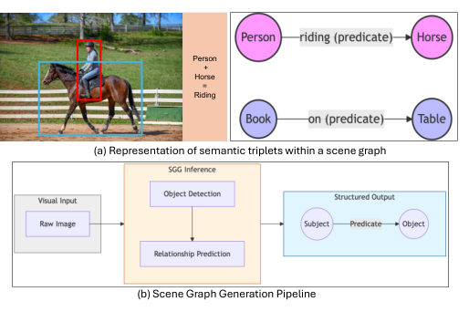
<figcaption class="paper-figure-caption"><b>Fig 1.</b> Fig. 1: The framework and general architecture of SGG. (a) Structural breakdown of semantic triplets, illustrating the relationships between entities. (b) The end-to-end pipeline transforms visual input into a structured graph.</figcaption>
</figure>
<figure class="paper-figure-card">
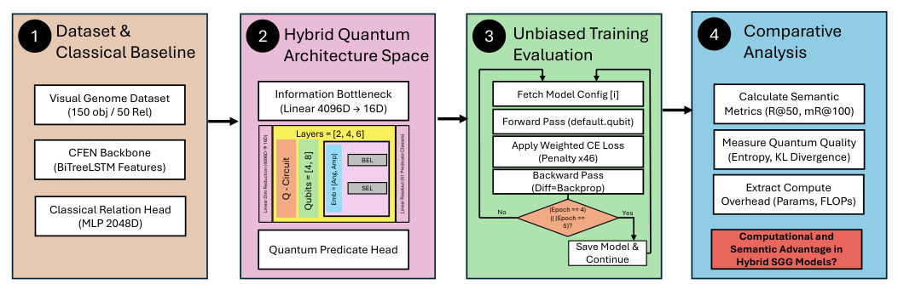
<figcaption class="paper-figure-caption"><b>Fig 2.</b> Fig. 2: The four-stage experimental pipeline. Stage 1 establishes the Visual Genome dataset and CFEN classical baseline. Stage 2 defines the quantum architecture search space across qubit count, embedding strategy, circuit depth, and entangling template. Stage 3 performs bias-aware class-balanced training and checkpointing. Stage 4 aggregates semantic metrics, quantum quality indicators, and computational-overhead measurements.</figcaption>
</figure>
<figure class="paper-figure-card">
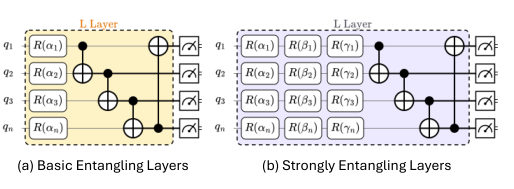
<figcaption class="paper-figure-caption"><b>Fig 3.</b> Fig. 3: Representative QP-Head circuit structures. (a) Basic Entangling Layers. (b) Strongly Entangling Layers. Both circuits process encoded predicate features through a variational quantum block and terminate with measurements that produce expectation values for the classical readout.</figcaption>
</figure>
<figure class="paper-figure-card">
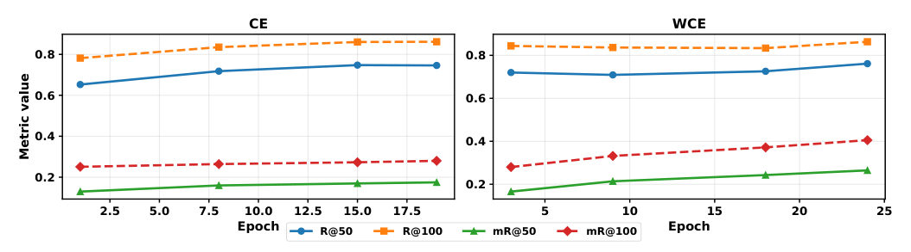
<figcaption class="paper-figure-caption"><b>Fig 4.</b> Fig. 4: Training dynamics of the 4-qubit QP-Head under standard CE and WCE losses using angle embedding and Basic Entangling Layers. The left graph shows training under standard CE, while the right graph shows training under WCE. WCE improves mR@50 and mR@100 more consistently while maintaining stable global recall, showing that class-balanced training improves long-tail predicate recognition without degrading overall relationship recall.</figcaption>
</figure>
<figure class="paper-figure-card">
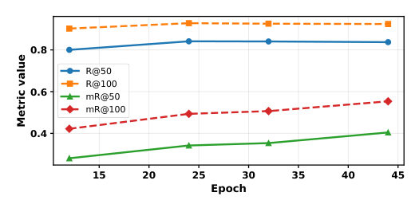
<figcaption class="paper-figure-caption"><b>Fig 5.</b> Fig. 5: Training dynamics of the 8-qubit QP-Head with Ampli- tude Embedding and 4-layer Strongly Entangling Layers. The graph shows R@50, R@100, mR@50, and mR@100 across training epochs. The 8-qubit configuration maintains stable global recall while improving long-tail predicate recognition across training.</figcaption>
</figure>
</div>
<p><strong>Summary.</strong> This paper introduces a Quantum Predicate Head (QP-Head) to enhance Scene Graph Generation by addressing the long-tail imbalance of predicate labels. By replacing a large classical classifier with a compact, hybrid quantum module, the authors achieve state-of-the-art mean recall scores while drastically reducing the number of trainable parameters. This validates the use of quantum circuits for parameter-efficient relational reasoning in complex vision tasks.</p>
<p><strong>Why it may be interesting.</strong> The work demonstrates a concrete application of quantum circuits (PQC) to solve a challenging, classically difficult machine learning problem (long-tail classification), providing quantitative metrics on parameter efficiency and performance gains.</p>
<details>
<summary>Detailed structure</summary>
<p><strong>Main problem.</strong> Scene Graph Generation (SGG) performance is hampered by severe long-tail predicate imbalance, causing models to over-rely on frequent relations.</p>
<p><strong>Main result.</strong> The proposed 4-qubit hybrid quantum head achieved an mR@100 of 57.25%, significantly outperforming the classical baseline (41.1%) while remaining highly parameter-efficient.</p>
<p><strong>Method.</strong> The authors replace the classical predicate head in an existing network with a Quantum Predicate Head (QP-Head), which processes compressed relational features through a trainable Variational Quantum Circuit (PQC).</p>
<p><strong>Model / system.</strong> The system is a hybrid quantum-classical model applied to visual scene graph reasoning. The QP-Head uses quantum encoding (Amplitude/Angle) and trainable entangling layers (e.g., SEL) to map high-dimensional features into a quantum state for classification.</p>
<p><strong>Key observables.</strong> Mean Recall ($ ext{mR}@K$), Global Recall ($    ext{R}@K$), trainable quantum parameters, KL divergence from Haar-random distribution, and inference latency.</p>
<p><strong>Important parameters / regimes.</strong> Qubit count ($n \in \{4, 8\}$), circuit depth ($L$), and the use of Weighted Cross-Entropy (WCE) loss.</p>
<p><strong>Assumptions / limitations.</strong> The study assumes that compact hybrid quantum heads can effectively capture the complex, long-tail relational structure in visual data while maintaining computational feasibility.</p>
<p><strong>Figures summary.</strong> Figures illustrate the general SGG framework, the four-stage experimental pipeline (baseline $
ightarrow$ quantum architecture $
ightarrow$ training $
ightarrow$ analysis), and representative quantum circuit structures.</p>
<p><strong>Paper structure.</strong> The paper follows a structured comparison: first establishing a classical baseline (CFEN); second, defining the quantum architecture search space (qubits, embedding, depth); third, training using a bias-aware loss (WCE); and finally, analyzing the trade-off between semantic performance, quantum expressibility, and computational overhead.</p>
</details>
<details>
<summary>Abstract</summary>
<p>Scene Graph Generation (SGG) requires relational reasoning over objects and their interactions, but performance is often limited by severe long-tail predicate imbalance. Classical SGG models frequently rely on dataset statistics, leading to biased predictions toward frequent relations rather than fine-grained semantic predicates. Although existing debiasing strategies improve mean recall, predicate classification in current frameworks still often depends on large classical decision modules with high parameter cost. This work introduces a hybrid quantum predicate classifier for SGG by replacing the classical predicate head in Causal Feature Enhancement Network (CFEN) with a Quantum Predicate Head (QP-Head) trained using weighted cross-entropy. To the best of our knowledge, this is among the first studies to evaluate a hybrid quantum architecture for scene graph predicate classification on Visual Genome 150. We study the effect of qubit count, encoding strategy, entangling structure, and circuit depth on relational prediction. The best 4-qubit QP-Head uses Amplitude Embedding and Strongly Entangling Layers to compress 4096-dimensional pair features into a 16-dimensional quantum-compatible representation, corresponding to a 256$\times$ reduction. It achieves an mR@100 of 57.25%, compared with 41.1% for the classical CFEN reference, while using only 96 trainable quantum parameters. Scaling to 8 qubits maintains strong long-tail performance, reaching an mR@100 of 55.38% with 384 quantum parameters, while the depth analysis shows a trade-off between expressibility and runtime overhead. These results suggest that compact hybrid quantum predicate heads can support parameter-efficient long-tail relational classification in complex visual reasoning tasks.</p>
</details>
<p><sub><a href="#top">↑ back to top</a></sub></p>

<p><a id="paper-2606.04186"></a></p>
<h3 id="quantum-information-harvesting-with-the-parallel-quantum-flow-algorithm"><a href="http://arxiv.org/abs/2606.04186v1">Quantum Information Harvesting with the Parallel Quantum Flow Algorithm</a></h3>
<p><strong>Authors:</strong> Nicholas P. Bauman, Ajay Panyala, Chenxu Liu, Muqing Zheng, Meng Wang, Karol Kowalski<br>
<strong>Type:</strong> theory · <strong>Category:</strong> quantum information and computing · <strong>PDF:</strong> <a href="https://arxiv.org/pdf/2606.04186v1">https://arxiv.org/pdf/2606.04186v1</a><br>
<strong>Analysis basis:</strong> full PDF text, analyzed in chunks</p>
<div class="figure-strip-hint">↔ Scroll figures horizontally</div>
<div class="paper-figures-scroll">
<figure class="paper-figure-card">
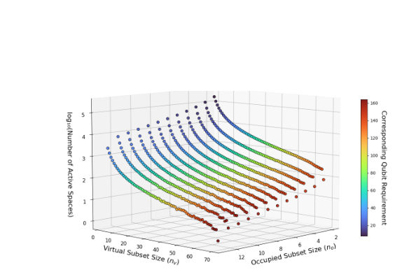
<figcaption class="paper-figure-caption"><b>Fig 1.</b> Figure 2. Number of active spaces for propane with the cc-pVDZ basis (No=13, Nv=69) determined for all combinations of active space sizes (no,nv) using the active-space sampling algorithm. Active-space counts are color-coded to the corresponding qubit requirement [2×(no +nv)].</figcaption>
</figure>
<figure class="paper-figure-card">
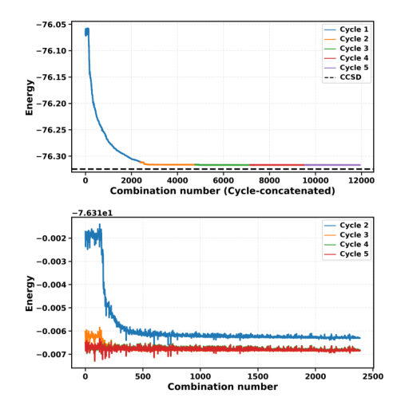
<figcaption class="paper-figure-caption"><b>Fig 2.</b> Figure 3. Top Panel: Energy profile of H2O QFlow calculation using the cc-pVTZ basis. Bottom Panel: Energy profile of cycles 2-5 arranged by active spaces aligned in increasing orbital energy difference.</figcaption>
</figure>
<figure class="paper-figure-card">
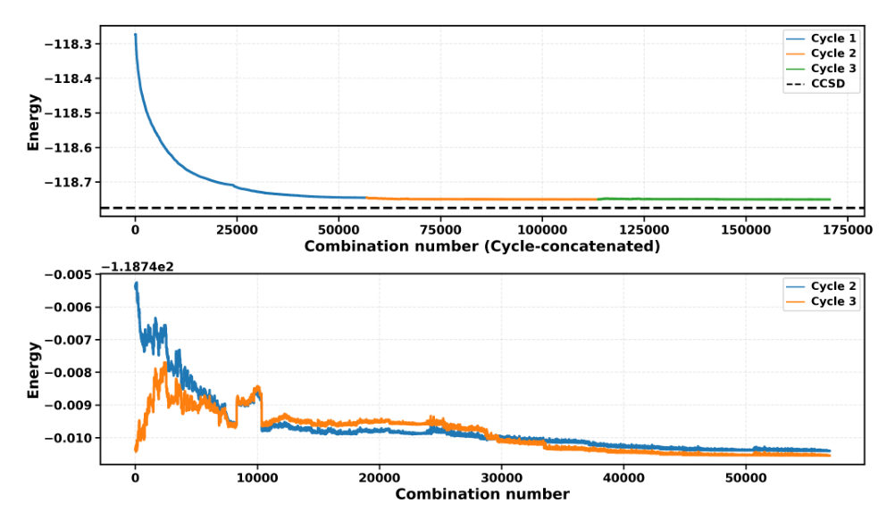
<figcaption class="paper-figure-caption"><b>Fig 3.</b> Figure 4. Top Panel: Energy profile of C3H8 QFlow calculation using the cc-pVDZ basis. Bottom Panel: Energy profile of cycles 2 and 3 arranged by active spaces aligned in increasing orbital energy difference.</figcaption>
</figure>
</div>
<p><strong>Summary.</strong> This paper introduces the Quantum Flow (QFlow) algorithm, a resource-efficient method for simulating complex correlated electronic structures on hybrid quantum-classical hardware. By decomposing the problem into smaller active-space subproblems, QFlow achieves high accuracy, recovering over 95% of the correlation energy benchmarked against CCSD. This demonstrates a scalable pathway for quantum chemistry simulations on near-term quantum hardware.</p>
<p><strong>Why it may be interesting.</strong> It presents a concrete, scalable quantum algorithm that bypasses the exponential scaling bottleneck of full quantum simulations by intelligently decomposing the problem into smaller, manageable quantum subroutines.</p>
<details>
<summary>Detailed structure</summary>
<p><strong>Main problem.</strong> The core challenge is accurately simulating correlated many-body systems, which suffer from exponential computational complexity.</p>
<p><strong>Main result.</strong> The Quantum Flow (QFlow) algorithm successfully recovers over 95% of the total correlation energy from CCSD benchmarks for large systems, even when the underlying qubit requirements are manageable.</p>
<p><strong>Method.</strong> QFlow uses a resource-efficient, parallel quantum-classical framework that decomposes the full problem into smaller, coupled active-space subproblems solved iteratively.</p>
<p><strong>Model / system.</strong> The method is applied to electronic Hamiltonians describing molecular systems (e.g., $  ext{H}_2    ext{O}$, Propane) in the context of quantum chemistry.</p>
<p><strong>Key observables.</strong> Total correlation energy (compared against CCSD), convergence rate, and the percentage of correlation energy recovered.</p>
<p><strong>Important parameters / regimes.</strong> The number of orbitals (up to 114), the number of active electrons/orbitals (e.g., 6 active electrons in 6 active orbitals), and the required qubit count (determined by the largest active space).</p>
<p><strong>Assumptions / limitations.</strong> The dominant correlation effects can be captured by averaging the results across a collection of reduced-dimensional active spaces, and the Trotter approximation is used for the energy functional.</p>
<p><strong>Figures summary.</strong> Figures illustrate the coverage-driven active-space sampling algorithm, energy profiles showing rapid convergence for $    ext{H}_2    ext{O}$, and the scaling of active spaces required for propane.</p>
<p><strong>Paper structure.</strong> The paper introduces the QFlow formalism, details the coverage-driven active-space sampling algorithm, presents the HPC implementation results on molecular systems, and compares the recovered correlation energy against established methods like CCSD.</p>
</details>
<details>
<summary>Abstract</summary>
<p>The Quantum Flow (QFlow) algorithm provides a resource-efficient framework for describing correlated many-body systems on hybrid quantum-classical architectures. By enabling parallel utilization of quantum and classical resources, QFlow offers a scalable pathway toward simulations of realistic systems. In this Letter, we report a high-performance computing (HPC) implementation of the QFlow formalism based on a singles-and-doubles model. We demonstrate its performance for target spaces comprising 82 and 114 orbitals, where the flow includes all 6 active electrons in 6 active orbitals type active spaces. In the largest QFlow simulations, we optimize 1.17 million wave function parameters using the equivalent of 12 qubits. Despite the modest qubit requirements of the underlying active-space problems, the method recovers over $95\%$ of the total correlation energy obtained with the coupled cluster singles and doubles (CCSD) approach for systems dominated by dynamical correlation effects, which remain challenging for existing quantum algorithms. We further show that the QFlow formalism retains high accuracy in extended basis sets with diffuse functions, highlighting its potential for realistic large-scale quantum chemistry simulations.</p>
</details>
<p><sub><a href="#top">↑ back to top</a></sub></p>

<p><a id="paper-2606.04786"></a></p>
<h3 id="resource-efficient-energy-based-operator-selection-in-fermionic-adapt-vqe-via-exact-hamiltonian-transformation"><a href="http://arxiv.org/abs/2606.04786v1">Resource-efficient energy-based operator selection in fermionic ADAPT-VQE via exact Hamiltonian transformation</a></h3>
<p><strong>Authors:</strong> Emanuele Rossi, Erik Rosendahl Kjellgren, Artur F. Izmaylov, Stephan P. A. Sauer, Karl Michael Ziems, Sonia Coriani<br>
<strong>Type:</strong> theory · <strong>Category:</strong> strongly correlated electrons · <strong>PDF:</strong> <a href="https://arxiv.org/pdf/2606.04786v1">https://arxiv.org/pdf/2606.04786v1</a><br>
<strong>Analysis basis:</strong> full PDF text, analyzed in chunks</p>
<div class="figure-strip-hint">↔ Scroll figures horizontally</div>
<div class="paper-figures-scroll">
<figure class="paper-figure-card">
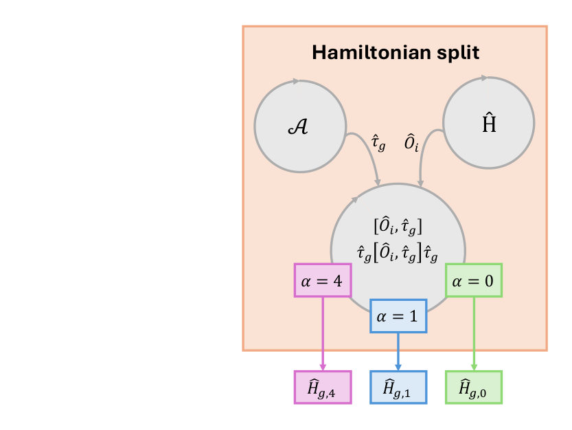
<figcaption class="paper-figure-caption"><b>Fig 1.</b> FIG. 1. Schematic representation of the Hamiltonian splitting procedure. Given a generator ˆτg</figcaption>
</figure>
<figure class="paper-figure-card">
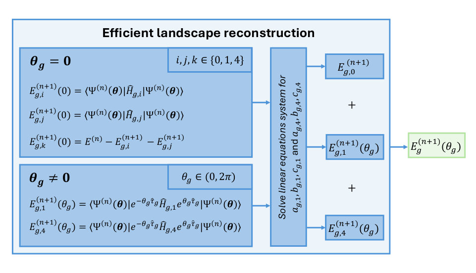
<figcaption class="paper-figure-caption"><b>Fig 2.</b> FIG. 2. Schematic representation of the efficient procedure to obtain the energy landscape</figcaption>
</figure>
<figure class="paper-figure-card">
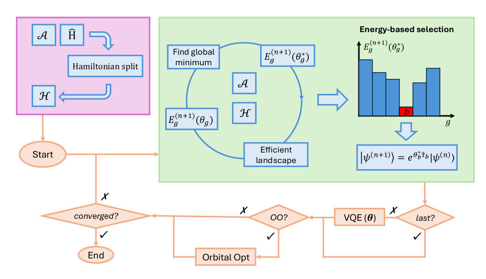
<figcaption class="paper-figure-caption"><b>Fig 3.</b> FIG. 3. Flowchart of the adaptive algorithm implementing the Rotoselect efficient selection routine.</figcaption>
</figure>
<figure class="paper-figure-card">
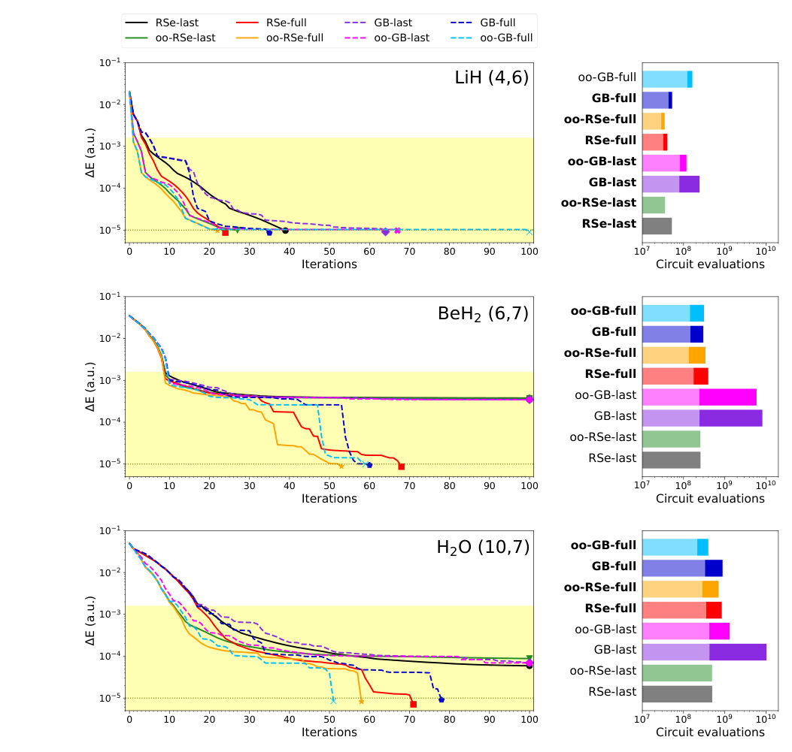
<figcaption class="paper-figure-caption"><b>Fig 4.</b> FIG. 4. Comparison of selection-optimization strategies within LiH (4,6), BeH2 (6,7) and H2O</figcaption>
</figure>
<figure class="paper-figure-card">
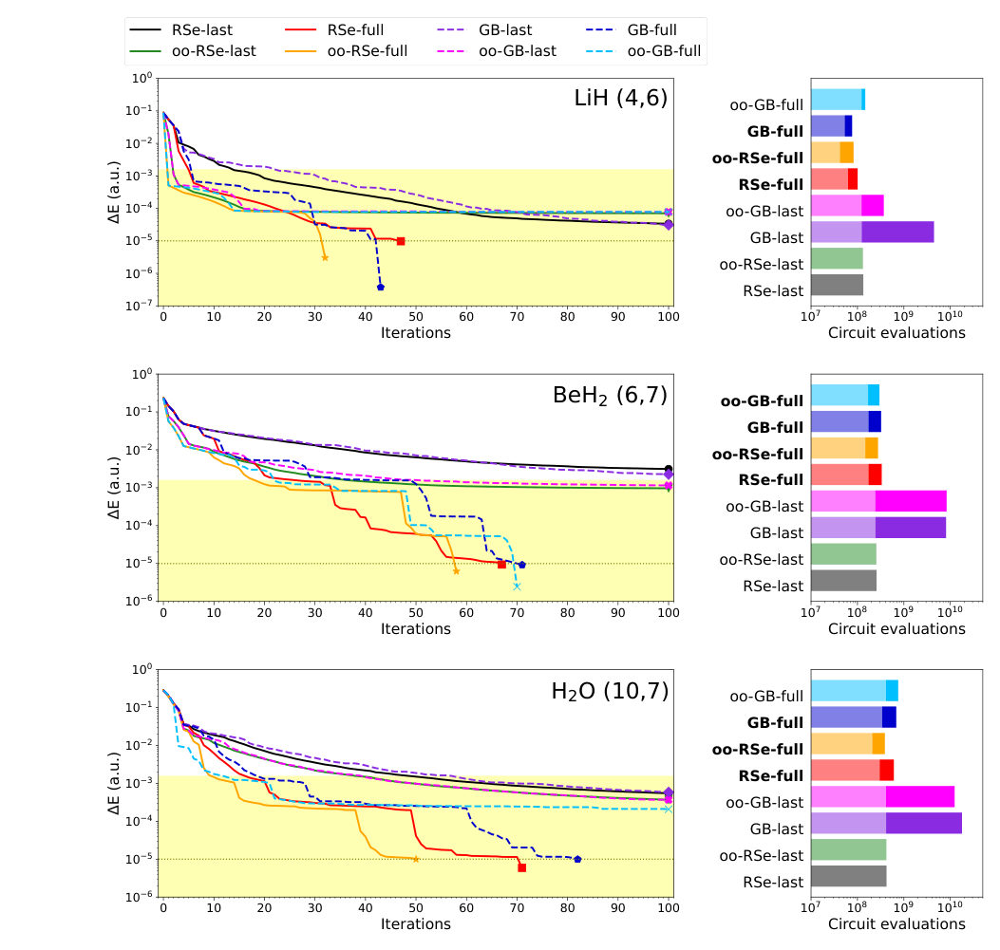
<figcaption class="paper-figure-caption"><b>Fig 5.</b> FIG. 5. Comparison of selection-optimization strategies in stretched LiH (4, 6), BeH2 (6, 7) and</figcaption>
</figure>
</div>
<p><strong>Summary.</strong> This paper improves the resource efficiency of energy-based operator selection in fermionic ADAPT-VQE by introducing an exact Hamiltonian transformation. This technique significantly reduces the measurement overhead required to score potential operators, making the selection process competitive with gradient-based methods. The results demonstrate that this efficient approach helps achieve accurate quantum chemical results for molecules even in highly correlated regimes.</p>
<p><strong>Why it may be interesting.</strong> This work directly tackles the resource scaling of quantum chemistry simulations, which is crucial for applying VQE to complex, strongly correlated molecular systems.</p>
<details>
<summary>Detailed structure</summary>
<p><strong>Main problem.</strong> The primary challenge addressed is the computational bottleneck associated with reconstructing the one-parameter energy landscape during energy-based operator selection in fermionic ADAPT-VQE.</p>
<p><strong>Main result.</strong> The authors introduce an exact Hamiltonian transformation that reformulates the energy landscape, reducing the measurement overhead of energy-based selection by about a factor of two, bringing it close to gradient-based methods.</p>
<p><strong>Method.</strong> The method involves using an exact Hamiltonian transformation to efficiently calculate the energy cost function $E^{(n+1)}_g(	heta_g)$ for operator selection, which is then used within the ADAPT-VQE framework.</p>
<p><strong>Model / system.</strong> The study is applied to fermionic quantum chemistry calculations for molecules like LiH, BeH2, and H2O, using the electronic Hamiltonian in second quantization.</p>
<p><strong>Key observables.</strong> Energy convergence relative to the FCI reference, selection cost (measured in circuit evaluations), and overall resource cost.</p>
<p><strong>Important parameters / regimes.</strong> The comparison spans weakly correlated (equilibrium) and highly correlated (stretched) molecular geometries.</p>
<p><strong>Assumptions / limitations.</strong> The efficiency gain relies on the mathematical identity derived from the exact Hamiltonian transformation, which simplifies the calculation of the energy cost function.</p>
<p><strong>Figures summary.</strong> Figures compare the energy convergence and the relative cost (selection vs. optimization) of various ADAPT-VQE strategies (Gradient vs. Energy-based) across different molecular geometries.</p>
<p><strong>Paper structure.</strong> The paper first establishes the ADAPT-VQE framework and the cost of energy-based selection. It then details the exact Hamiltonian transformation to derive a resource-efficient energy cost function. Finally, it benchmarks this improved method against gradient-based approaches across various molecular systems and optimization strategies.</p>
</details>
<details>
<summary>Abstract</summary>
<p>The energy-based approach to operator selection in ADAPT-VQE relies on reconstructing the one-parameter energy landscape for each operator in the pool. In fermionic implementations, the cost of reconstructing this energy landscape often becomes a bottleneck. We address this issue through an exact Hamiltonian transformation that reformulates the one-parameter energy landscape according to a generator-dependent fragmentation of the transformed Hamiltonian. While our method is mathematically identical to standard fermionic Rotoselect, it effectively reduces its cost by about a factor of two, bringing it close to that of gradient-based ADAPT-VQE. We use this formulation to benchmark the gradient-based and energy-based selection approaches in combination with two ansatz-optimization strategies -- <code>last', where only the appended operator is optimized, or</code>full', where the full ansatz is re-optimized -- and with both fixed-orbital and orbital-optimized formulations. The benchmark comprises $\text{LiH}$, $\text{BeH}_2$, and $\text{H}_2\text{O}$ at both equilibrium and stretched geometries. In the weakly correlated regime, the `last' optimization strategy combined with energy-based selection enables the efficient construction of an accurate ansatz, while avoiding any VQE optimization. As correlation increases, full ansatz re-optimization and orbital optimization become the main factors governing convergence and overall resource cost. These results show that exact Hamiltonian transformations provide an effective route to reducing the measurement overhead of fermionic energy-based ADAPT-VQE. Moreover, the benchmark clarifies the relative role of operator scoring approach, re-optimization strategy, and orbital treatment in the performance of ADAPT-VQE.</p>
</details>
<p><sub><a href="#top">↑ back to top</a></sub></p>

<p><a id="paper-2606.04651"></a></p>
<h3 id="spectral-criteria-for-generalization-in-unsupervised-hebbian-nets"><a href="http://arxiv.org/abs/2606.04651v1">Spectral criteria for generalization in unsupervised Hebbian nets</a></h3>
<p><strong>Authors:</strong> Elena Agliari, Paulo Duarte Mourão, Alberto Fachechi, Pierpaolo Vivo<br>
<strong>Type:</strong> theory · <strong>Category:</strong> disordered systems and neural networks · <strong>PDF:</strong> <a href="https://arxiv.org/pdf/2606.04651v1">https://arxiv.org/pdf/2606.04651v1</a><br>
<strong>Analysis basis:</strong> full PDF text, analyzed in chunks</p>
<div class="figure-strip-hint">↔ Scroll figures horizontally</div>
<div class="paper-figures-scroll">
<figure class="paper-figure-card">
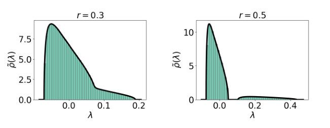
<figcaption class="paper-figure-caption"><b>Fig 1.</b> Fig. 1: Spectrum of the unsupervised model characterized by the interaction matrix ˜ J H in Eq. (7), for r = 0.3 (left) and r = 0.5 (right). The histogram in green represents the data resulting from computing the eigenvalues of interaction matrices with N = 1000 neurons across 50 independent samples, while the solid black line shows the corresponding theoretical prediction. The load and number of examples were fixed at α = 0.1 and M = 50, respectively.</figcaption>
</figure>
<figure class="paper-figure-card">
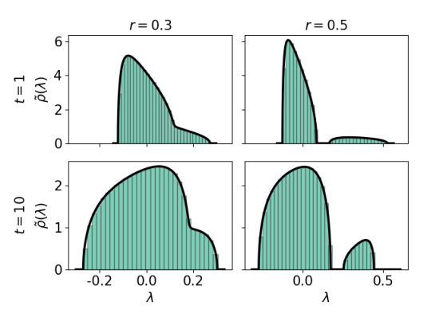
<figcaption class="paper-figure-caption"><b>Fig 2.</b> Fig. 2: Spectrum of the unsupervised regularized model characterized by the interaction matrix ˜ J D(t) in Eq. (8), for r = 0.3 (left) and r = 0.5 (right), and t = 1 (above) and t = 10 (below). The histogram in green represents the data resulting from computing the eigenvalues of interaction matrices with N = 1000 neurons across 50 independent samples, while the black solid line shows the corresponding theoretical prediction. The load and number of examples were fixed at α = 0.1 and M = 50, respectively.</figcaption>
</figure>
<figure class="paper-figure-card">
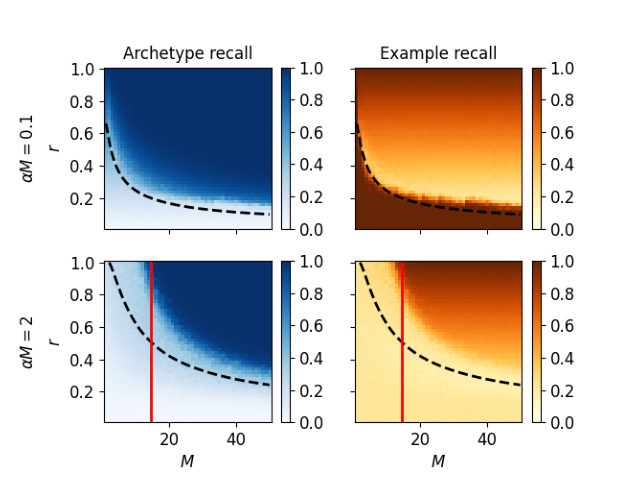
<figcaption class="paper-figure-caption"><b>Fig 3.</b> Fig. 3: MC simulations for the unsupervised Hopfield model run until convergence for the recovery of archetypes (left) and examples (right) for various values of r and M, in the low-rank (above) and full-rank (below) scenarios. The color maps show the archetype overlap (mξ = 1 N PN i=1 σ(∞) i ξµ i , left column) and the closest-example overlap (m ˜ξ = 1 N PN i=1 σ(∞) i ˜ξµ a,i, right column) computed upon convergence to fixed points σ(∞), and averaged across 50 samples. We used N = 1000 and the starting state had a quality of p = 0.9 compared to a stored example. The black dashed line marks the separation of the spectrum into two peaks (predicted theoretically by Eq. (13)), while the...</figcaption>
</figure>
<figure class="paper-figure-card">
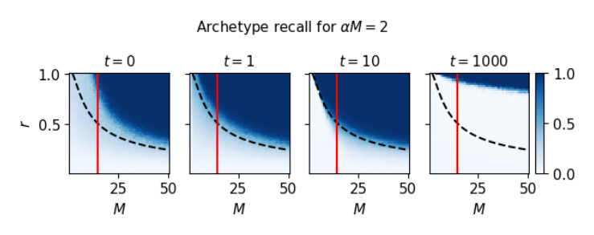
<figcaption class="paper-figure-caption"><b>Fig 4.</b> Fig. 4: MC simulations run until convergence for the recovery of archetypes for various values of r, M and t in the full- rank scenario (αM = 2). The color maps report the value of the archetype overlap (mξ = 1</figcaption>
</figure>
<figure class="paper-figure-card">
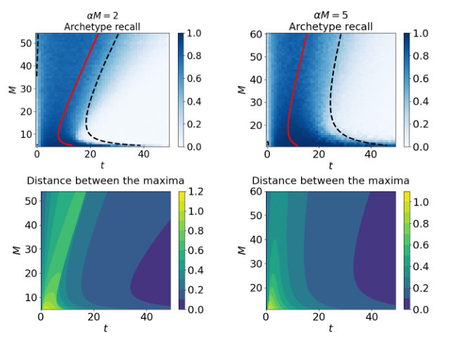
<figcaption class="paper-figure-caption"><b>Fig 5.</b> Fig. 5: MC simulations comparing the generalization capabilities of the unsupervised regularized model with properties of the spectrum, for ranks αM = 2 (left) and αM = 5 (right). In the upper row, generalization experiments are conducted: the color maps report the value of the archetype overlap (mξ = 1 N PN i=1 σ(∞) i ξµ i ) computed upon convergence to fixed points; these were run similarly to those shown in Figs. 3 and 4, but for the points defined by equation (14), and starting from new examples instead of close to stored ones. The final overlaps relative to the corresponding archetypes are then measured and averaged over 50 independent samples for each point. The black dashed line...</figcaption>
</figure>
</div>
<p><strong>Summary.</strong> This work develops a theoretical framework using random matrix theory to analyze unsupervised Hebbian networks. It shows that the network's ability to generalize is directly encoded in the spectral structure of its interaction matrix. A clear spectral separation between signal and noise directions is predicted to be the necessary condition for successful reconstruction of underlying patterns.</p>
<p><strong>Why it may be interesting.</strong> The rigorous mathematical framework connecting spectral properties (eigenvalue distribution) to functional performance (generalization) provides a powerful, generalizable diagnostic tool applicable to complex quantum or classical learning systems.</p>
<details>
<summary>Detailed structure</summary>
<p><strong>Main problem.</strong> To derive the asymptotic spectral properties of the interaction matrix in unsupervised Hebbian networks and establish spectral criteria that predict the network's ability to generalize beyond training data.</p>
<p><strong>Main result.</strong> Generalization capability is predicted by the spectral transition: the existence of two separated spectral bulks (signal/noise separation) indicates successful generalization, while a merged single-bulk phase implies failure.</p>
<p><strong>Method.</strong> The analysis combines random matrix theory and replica methods to compute the quenched free energy and derive the limiting spectral density of the interaction matrix.</p>
<p><strong>Model / system.</strong> The model is an unsupervised Hebbian network trained on noisy realizations of hidden ground-truth vectors, extending classical Hopfield models from simple memory retrieval to latent structure extraction.</p>
<p><strong>Key observables.</strong> The asymptotic spectrum ($ ilde{
ho}'(\lambda)$), the spectral gap (separation into two bulks), and the overlap measures (archetype and example overlaps).</p>
<p><strong>Important parameters / regimes.</strong> Network load ($\alpha$), noise parameter ($r$), regularization parameter ($t$), and the ratio $\alpha M$ which dictates the spectral regime.</p>
<p><strong>Assumptions / limitations.</strong> The analysis relies on the thermodynamic limit ($N 	o \infty$) and the use of the replica-symmetric ansatz for order parameters.</p>
<p><strong>Figures summary.</strong> Figures illustrate the theoretical spectral predictions versus numerical simulations, showing the spectral evolution under regularization and comparing spectral analysis results with overlap measurements across different load regimes.</p>
<p><strong>Paper structure.</strong> The paper progresses by first deriving the spectral density using random matrix theory and replica methods, then analyzing the effect of regularization ($t$) on this spectrum, and finally establishing the spectral gap as the necessary and sufficient condition for successful generalization.</p>
</details>
<details>
<summary>Abstract</summary>
<p>We consider an unsupervised Hebbian network where the pairwise interactions among neurons are built on noisy realizations of hidden ground-truth vectors. Unlike classical Hopfield models, designed as memory devices, this class of networks can be employed to extract latent structure and generalize beyond the "training" set. By combining random matrix theory and replica methods, we derive the asymptotic spectrum of the corresponding interaction matrix and show that the onset of generalization is controlled by a sharp spectral transition. Depending on the quality and the size of the accessible dataset, the spectrum displays either two separated bulks, encoding informative and noisy directions, or a merged single-bulk phase where such distinction is lost. We show that, when coupled with regularization, the emergence of such a spectral split predicts the network's capability to reconstruct the ground-truth vectors from corrupted samples.</p>
</details>
<p><sub><a href="#top">↑ back to top</a></sub></p>

<p><a id="paper-2606.05148"></a></p>
<h3 id="variational-low-energy-subspaces-for-chemically-accurate-excited-states"><a href="http://arxiv.org/abs/2606.05148v1">Variational low-energy subspaces for chemically accurate excited states</a></h3>
<p><strong>Authors:</strong> Clemens Giuliani, Rocco Martinazzo, Giuseppe Carleo, Riccardo Rossi<br>
<strong>Type:</strong> theory · <strong>Category:</strong> other · <strong>PDF:</strong> <a href="https://arxiv.org/pdf/2606.05148v1">https://arxiv.org/pdf/2606.05148v1</a><br>
<strong>Analysis basis:</strong> full PDF text, analyzed in chunks</p>
<div class="figure-strip-hint">↔ Scroll figures horizontally</div>
<div class="paper-figures-scroll">
<figure class="paper-figure-card">
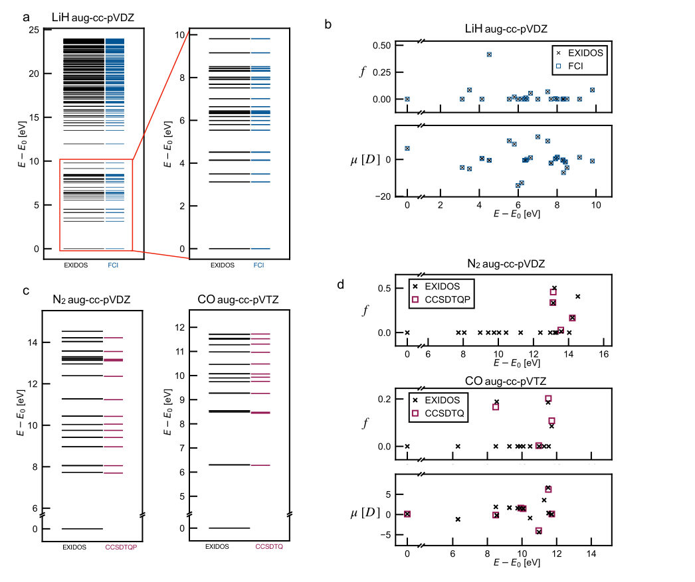
<figcaption class="paper-figure-caption"><b>Fig 1.</b> Figure 1. Automatic optimization of the low-energy subspace. (a-b) EXIDOS(256,32) calculation of LiH spectrum, oscillator strength f and dipole moment µ, compared with FCI. (c-d) All-electron EXIDOS(24, 256) and EXIDOS(33, 256) results for the N2 and CO molecules, respectively, are compared with the benchmark results from Ref. [23, 24]. We note that panel (c-d) includes additional low-lying triplet states absent from the benchmark.</figcaption>
</figure>
<figure class="paper-figure-card">
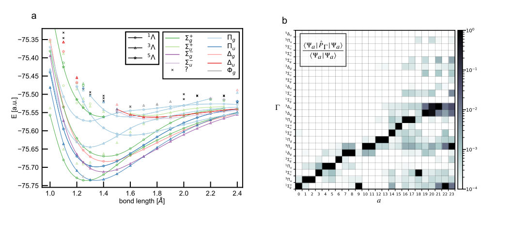
<figcaption class="paper-figure-caption"><b>Fig 2.</b> Figure 2. (a) EXIDOS potential energy curve of the lowest states of C2. We show an all-electron EXIDOS (24,256) calculation in the aug-cc-pVDZ basis. (b) Symmetry retrieval from operator measurements. We show the expectation value of the projector ˆPΓ onto each irreducible representation Γ of a term symbol as function of the state index at equilibrium geometry for C2 (R = 1.248), computed using the techniques described in Ref. [25, 26].</figcaption>
</figure>
<figure class="paper-figure-card">
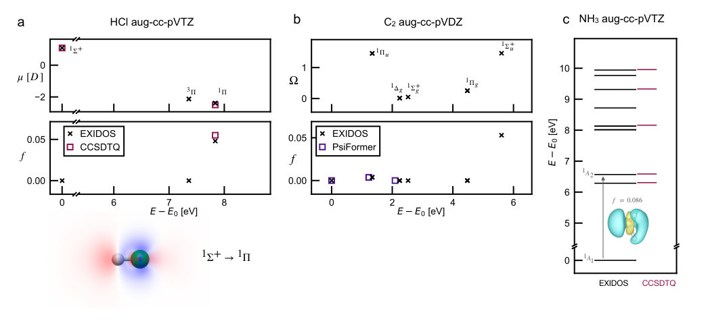
<figcaption class="paper-figure-caption"><b>Fig 3.</b> Figure 3. Excited states with different electronic character. (a) Charge-transfer excitation in HCl. A frozen-core EXIDOS(5,256) calculation reproduces the excitation energy, dipole moments µ and oscillator strength f of the 1Σ+ →1Π transition, compared with CCSDTQ [27]. Our calculation also includes the lowest 3Π state absent from the benchmark. The density difference plot illustrates the charge redistribution for the 1Σ+ →1Π transition. (b) Double excitations in C2 at equilibrium. An all-electron EXIDOS(24,256) calculation recovers the low-lying singlet states with strong double-excitation character. Ωquantifies the doubly excited character of each excited state: Ω→0 indicates a state...</figcaption>
</figure>
<figure class="paper-figure-card">
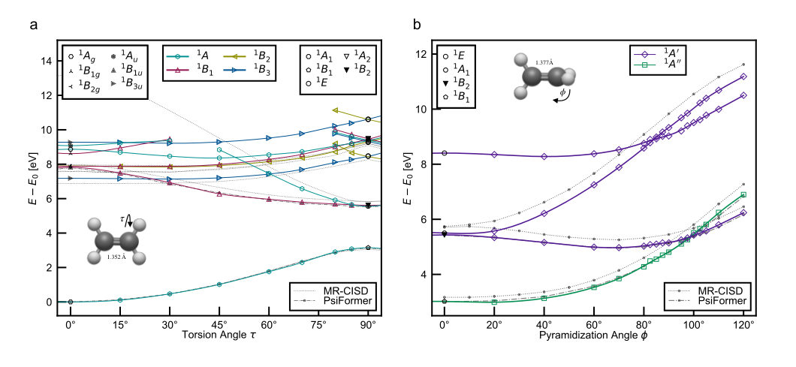
<figcaption class="paper-figure-caption"><b>Fig 4.</b> Figure 4. (a) Bond torsion of the ethylene molecule starting from the planar geometry. (b) Bond pyramidization of the ethylene molecule starting from the twisted-orthogonal geometry. Results are obtained from an all-electron EXIDOS simulation of K = 10 states (16 for a few geometries) with ND = 256 determinants in the aug-cc-pVDZ basis, and the geometries are from Ref. [29]. We compare with MR-CISD in the same basis [29] and with PsiFormer [17]. In both panels we use a ˆS2 spin penalty to only select singlets in order to reduce the computational cost.</figcaption>
</figure>
</div>
<p><strong>Summary.</strong> This paper introduces EXIDOS, a novel, low-scaling variational method for calculating electronic excited states. It reformulates the complex excited-state optimization into an iterative, ground-state-like problem solvable via generalized eigenvalue equations. The method achieves chemical accuracy across diverse molecular systems, making it a powerful tool for photochemistry and spectroscopy.</p>
<p><strong>Why it may be interesting.</strong> This provides a highly scalable, fully variational route to excited states that bypasses the need for explicit symmetry assumptions or state-specific knowledge, which is a major bottleneck in non-adiabatic dynamics simulations.</p>
<details>
<summary>Detailed structure</summary>
<p><strong>Main problem.</strong> Accurately calculating electronic excited states is crucial for photochemistry and spectroscopy, but high-level methods scale steeply and require prior knowledge of the state's character.</p>
<p><strong>Main result.</strong> The developed EXIDOS method achieves chemical accuracy for numerous excited states in various molecules by reformulating the optimization as an iterated ground-state-like problem.</p>
<p><strong>Method.</strong> The method reformulates the variational excited-state optimization as an iterated ground-state problem, solving a generalized eigenvalue problem within a low-energy subspace spanned by non-orthogonal Slater determinants.</p>
<p><strong>Model / system.</strong> The work applies to general molecular systems, benchmarked on molecules like N2, CO, HCl, C2, and NH3, using the electronic molecular Hamiltonian.</p>
<p><strong>Key observables.</strong> Excitation energies, oscillator strengths, dipole moments, and the ability to characterize different state types (charge-transfer, Rydberg, double excitations).</p>
<p><strong>Important parameters / regimes.</strong> The method is controlled only by the number of states ($K$) and the number of determinants per state ($ ext{ND}$); accuracy is benchmarked against FCI and high-level CC methods.</p>
<p><strong>Assumptions / limitations.</strong> The method assumes the overlap matrix $\mathbf{S}$ is non-singular and uses an unconstrained Slater determinant basis, which is noted to not be strictly size-consistent.</p>
<p><strong>Figures summary.</strong> Figures compare EXIDOS results against FCI/CCSDTQ for spectra, show potential energy curves for C2, and illustrate the characterization of different excited states (charge-transfer, double excitations, Rydberg) in various molecules.</p>
<p><strong>Paper structure.</strong> The paper systematically develops the theoretical framework by reformulating the excited-state optimization into a generalized eigenvalue problem, detailing the EXIDOS algorithm, and validating its performance across diverse chemical benchmarks.</p>
</details>
<details>
<summary>Abstract</summary>
<p>Accurate electronic excited states are essential for photochemistry, spectroscopy and non-adiabatic molecular dynamics, but high-level calculations often scale steeply and require prior knowledge of the target state's character or symmetry. Here we show that variational excited-state optimization can be reformulated as an iterated ground-state-like problem for a low-energy subspace of the electronic Hamiltonian. Applying this variational principle to non-orthogonal Slater determinants leads to EXIDOS, an automatic method for excited state calculations controlled only by the number of states and determinants per state. EXIDOS optimizes multiple excited states simultaneously, without explicit orthogonality constraints or imposed spin and point-group symmetries. Benchmarks against FCI and state-of-the-art quantum chemistry methods show chemical accuracy for a multitude of states in N$_2$ and CO, charge-transfer states in HCl, Rydberg states in NH$_3$, double excitations and extended potential-energy curves in C$_2$, and avoided crossings and conical intersections in ethylene. These results establish EXIDOS as a low-scaling, fully variational route to chemically accurate excited states.</p>
</details>
<p><sub><a href="#top">↑ back to top</a></sub></p>

<p><a id="paper-2606.04533"></a></p>
<h3 id="vibrational-model-of-entropy-in-dense-two-dimensional-fluids"><a href="http://arxiv.org/abs/2606.04533v1">Vibrational model of entropy in dense two-dimensional fluids</a></h3>
<p><strong>Authors:</strong> Sergey Khrapak<br>
<strong>Type:</strong> theory · <strong>Category:</strong> statistical mechanics · <strong>PDF:</strong> <a href="https://arxiv.org/pdf/2606.04533v1">https://arxiv.org/pdf/2606.04533v1</a><br>
<strong>Analysis basis:</strong> full PDF text, analyzed in chunks</p>
<div class="figure-strip-hint">↔ Scroll figures horizontally</div>
<div class="paper-figures-scroll">
<figure class="paper-figure-card">
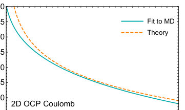
<figcaption class="paper-figure-caption"><b>Fig 1.</b> FIG. 1. (Color online) Excess entropy of the 2D OCP with Coulomb (∝1/r) interaction versus the coupling parameter Γ. The solid line corresponds to a fit based on MC simula- tion results [44]. The dashed line corresponds to the present theoretical model.</figcaption>
</figure>
<figure class="paper-figure-card">
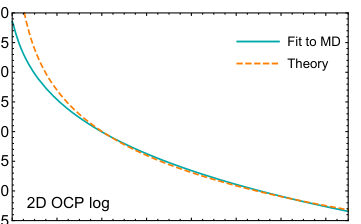
<figcaption class="paper-figure-caption"><b>Fig 2.</b> FIG. 2. (Color online) Excess entropy of the 2D OCP with logarithmic interaction (∝ln(1/r)) versus the coupling pa- rameter Γ. The solid line corresponds to a fit based on MC and MD simulation results [20, 21]. The dashed line corre- sponds to the present theoretical model.</figcaption>
</figure>
<figure class="paper-figure-card">

<figcaption class="paper-figure-caption"><b>Fig 3.</b> FIG. 3. (Color online) Excess entropy of the 2D fluid with dipole (∝1/r3) interaction versus the coupling parameter Γ. The solid line corresponds to a fit based on MD simulation results [29]. The dashed line corresponds to the present the- oretical model.</figcaption>
</figure>
<figure class="paper-figure-card">

<figcaption class="paper-figure-caption"><b>Fig 4.</b> Figure 3 presents a comparison between theory and numerical data for a 2D fluid with the dipole-like inverse cube interaction potential. The estimate of the Einstein frequency at strong coupling can be made using the re- sults reported in Ref. [29]. Specifically, ω2 E ≃3</figcaption>
</figure>
<figure class="paper-figure-card">
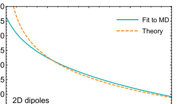
<figcaption class="paper-figure-caption"><b>Fig 5.</b> Figure 4 shows a comparison between the vibrational approximation to excess entropy and the numerical data for the 2D Yukawa fluid with κ = 1, 2, and 3. For the 2D Yukawa fluid, the ratio ωE/ω0 is only weakly dependent on Γ, but drops considerably as κ increases (see Fig. 4 from Ref. [42]). We use the values reported in Ref. [50], corresponding to the vicinity of the fluid-solid phase tran- sition: ωE/ω0 ≃0.5159 (κ = 1), ≃0.3297 (κ = 2), and ≃0.1893 (κ = 3). The agreement between the predic- tion of the vibrational model and the equation of state is again remarkably good at strong coupling.</figcaption>
</figure>
</div>
<p><strong>Summary.</strong> This paper develops and applies a vibrational model to calculate the excess entropy of dense two-dimensional fluids, extending a known 3D technique to 2D systems. It successfully tests this generalized model against various 2D plasmas and fluids, showing strong agreement with simulation results. The work provides a powerful theoretical tool for characterizing the thermodynamics of strongly coupled 2D matter.</p>
<p><strong>Why it may be interesting.</strong> While focused on classical statistical mechanics, the rigorous application of vibrational models and the comparison of theoretical approximations (Einstein vs. DR-based) to simulation data mirrors the systematic theoretical development seen in many-body quantum systems.</p>
<details>
<summary>Detailed structure</summary>
<p><strong>Main problem.</strong> The paper generalizes a vibrational model of entropy, previously used for 3D dense fluids, to accurately calculate the excess entropy of two-dimensional (2D) fluids.</p>
<p><strong>Main result.</strong> The derived vibrational model provides a universal and simple generic form for the excess entropy ($s_{ex}$) that shows good agreement with numerical simulation data for various 2D systems.</p>
<p><strong>Method.</strong> The excess entropy is calculated using a vibrational paradigm, approximating the partition function and relating $s_{ex}$ to the excess thermal energy and free energy via established thermodynamic relations.</p>
<p><strong>Model / system.</strong> The study focuses on dense 2D fluids, including one-component plasmas (OCP) with Coulomb and logarithmic interactions, 2D dipole fluids, and 2D Yukawa fluids.</p>
<p><strong>Key observables.</strong> Excess entropy ($s_{ex}$), excess thermal internal energy ($u_{th}$), and the coupling parameter ($\Gamma$).</p>
<p><strong>Important parameters / regimes.</strong> Coupling parameter ($\Gamma$), characteristic frequency ($\omega_E$), and plasma frequency ($\omega_0$).</p>
<p><strong>Assumptions / limitations.</strong> The model relies on the Einstein approximation for the vibrational density of states, and the derived equations are most accurate in the strongly coupled regime ($\Gamma \gg 1$).</p>
<p><strong>Figures summary.</strong> Figure 1 and Figure 2 compare the calculated excess entropy of 2D OCPs (Coulomb and logarithmic) against existing Monte Carlo simulation data, demonstrating the model's accuracy.</p>
<p><strong>Paper structure.</strong> The paper introduces the generalization of the vibrational model to 2D, derives the universal expression for $s_{ex}$, and then applies this framework to test its accuracy against known results for multiple 2D plasma and fluid models.</p>
</details>
<details>
<summary>Abstract</summary>
<p>A vibrational paradigm of atomic dynamic in dense fluids is known to provide useful insight on the transport and thermodynamic properties of fluids in three dimensions. In this paper, a vibrational model is generalized to describe the excess entropy of two-dimensional (2D) fluids. A simple practical implementation of this model is demonstrated to deliver accurate results for various systems, such as one-component plasmas with Coulomb and logarithmic interactions, a 2D fluid of dipole particles, and a 2D Yukawa fluid. The applicability limits, relevance to three-dimensional fluids, relations to other 2D phenomena, and potential practical applications are briefly discussed.</p>
</details>
<p><sub><a href="#top">↑ back to top</a></sub></p>
</details>
<h2 id="secondary-cond-mat-archives">Secondary cond-mat archives</h2>
<p><em>Papers from cond-mat.mtrl-sci, mes-hall, other, soft, supr-con. These archives are de-prioritized — they appear at the end regardless of relevance score.</em></p>
<h3 id="relevant-in-secondary-archives-18">Relevant in secondary archives (18)</h3>

<p><a id="paper-2606.04976"></a></p>
<h3 id="effective-and-floquet-hamiltonians-for-high-frequency-driving-and-floquet-induced-heating-in-quantum-spin-chains"><a href="http://arxiv.org/abs/2606.04976v1">Effective and Floquet Hamiltonians for High Frequency Driving and Floquet-induced Heating in Quantum Spin Chains</a></h3>
<p><strong>Authors:</strong> Mayukh Bandyopadhyay, Vinod Ashokan<br>
<strong>Type:</strong> theory · <strong>Category:</strong> disordered systems and neural networks · <strong>PDF:</strong> <a href="https://arxiv.org/pdf/2606.04976v1">https://arxiv.org/pdf/2606.04976v1</a><br>
<strong>Analysis basis:</strong> full PDF text, analyzed in chunks
<strong>Topic relevance:</strong> 🔥 <code>non-equilibrium dynamics</code> <strong>4/5</strong> · 🔥 <code>scars &amp; prethermalization</code> <strong>4/5</strong> · <code>analog quantum simulation</code> <strong>3/5</strong> · <code>driven-dissipative phase transition</code> <strong>3/5</strong> · <code>entanglement &amp; information structure</code> <strong>3/5</strong> · <code>non-equilibrium universality</code> <strong>3/5</strong> · <code>methods for driven-dissipative</code> <strong>2/5</strong> · <code>exotic spin models in light-matter</code> <strong>1/5</strong></p>
<div class="figure-strip-hint">↔ Scroll figures horizontally</div>
<div class="paper-figures-scroll">
<figure class="paper-figure-card">
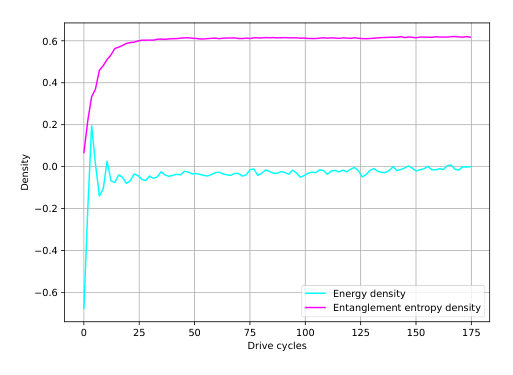
<figcaption class="paper-figure-caption"><b>Fig 1.</b> FIG. 1. Stroboscopic dynamics of the energy density and entanglement entropy density together in a clean periodically driven TFIM in a parallel field. Parameters: g/J = 0.915, h/J = 1.236, Ω/J = 3.5998 and L = 14.</figcaption>
</figure>
<figure class="paper-figure-card">
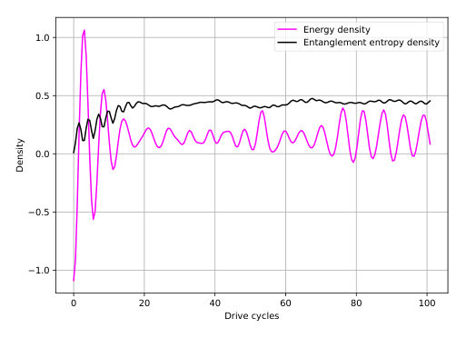
<figcaption class="paper-figure-caption"><b>Fig 2.</b> FIG. 3. Stroboscopic dynamics of the energy density and entanglement entropy density together in a clean periodically driven TFIM in a parallel field. Parameters: g/J = 1.2, h/J = 2.536, Ω/J = 12.458 and L = 12.</figcaption>
</figure>
<figure class="paper-figure-card">
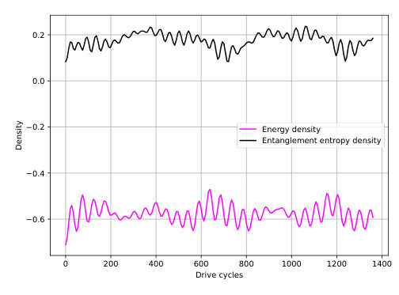
<figcaption class="paper-figure-caption"><b>Fig 3.</b> FIG. 2. Stroboscopic dynamics of the energy density and entanglement entropy density together in a clean periodically driven TFIM in a parallel field. Parameters: g/J = 1.2, h/J = 0.02, Ω/J = 0.924 and L = 12.</figcaption>
</figure>
<figure class="paper-figure-card">
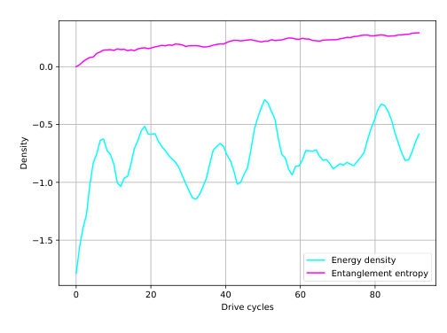
<figcaption class="paper-figure-caption"><b>Fig 4.</b> FIG. 4. Stroboscopic dynamics of the energy density and en- tanglement entropy density together in the periodically driven TFIM in a parallel field with quenched disorder in parallel and transverse field components. Parameters: g/J = 0.915, h/J = 1.234, Ω/J = 8.36, Wh = 5.85, Wg = 0.02 and L = 12.</figcaption>
</figure>
</div>

<p><strong>Summary.</strong> This paper analyzes how disorder and high-frequency driving control the non-equilibrium dynamics of quantum spin chains. By studying entanglement entropy and energy absorption, the authors distinguish between thermalization, prethermalization, and a robust Floquet-MBL phase. The findings highlight that disorder is crucial for stabilizing non-equilibrium, localized states against external driving.</p>
<p><strong>Why it may be interesting.</strong> This work directly addresses non-equilibrium dynamics in disordered quantum systems, which is central to understanding thermalization, localization, and the stability of quantum states under external driving fields, highly relevant to AMO physics.</p>
<details>
<summary>Detailed structure</summary>
<p><strong>Main problem.</strong> The study investigates the non-equilibrium dynamics of a disordered, periodically driven quantum spin chain, focusing on the competition between interaction, disorder, and external driving.</p>
<p><strong>Main result.</strong> The research establishes that strong disorder and high driving frequencies can suppress energy absorption and lead to a stable Floquet-Many-Body Localized (Floquet-MBL) regime, preventing thermalization.</p>
<p><strong>Method.</strong> The analysis employs Floquet theory, utilizing the van Vleck inverse-frequency expansion to derive effective Hamiltonians, alongside numerical simulations to track energy and entanglement entropy.</p>
<p><strong>Model / system.</strong> The system is a disordered, periodically driven quantum spin chain (e.g., transverse-field Ising model) governed by a time-periodic Hamiltonian incorporating nearest-neighbor interactions, disorder fields, and a time-dependent drive.</p>
<p><strong>Key observables.</strong> Entanglement entropy density, energy absorption/energy density, and the comparison between localized/prethermal and thermalized dynamic regimes.</p>
<p><strong>Important parameters / regimes.</strong> Interaction strength (J), disorder strengths (W), driving frequency ($\Omega$), and the ratio of disorder to interaction scales.</p>
<p><strong>Assumptions / limitations.</strong> The analysis relies on the high-frequency expansion (van Vleck expansion) to approximate the effective static Hamiltonian, and numerical simulations are limited to small system sizes.</p>
<p><strong>Figures summary.</strong> Figures illustrate stroboscopic dynamics showing bounded energy density oscillations and slow, saturating entanglement growth under strong disorder and high driving frequencies, contrasting with thermalization signatures at low frequencies.</p>
<p><strong>Paper structure.</strong> The paper systematically analyzes the system's evolution by comparing different parameter regimes: low frequency (thermalization), high frequency without disorder (prethermalization), and high frequency with strong disorder (Floquet-MBL).</p>
</details>
<details>
<summary>Abstract</summary>
<p>We study the non-equilibrium dynamics of a disordered periodically driven quantum spin chain, with the competition between the interaction, disorder, and Floquet driving being of particular interest. We study dynamics of entanglement entropy, energy absorption to characterize dynamical regimes of the system whether it stays in the Floquet-MBL(many-body localization) region or thermalized region. Starting with a product state in the computational basis, followed by reduced density matrix which in turn gives rise to the entanglement entropy density. With the strength of the interaction, the transverse field, the parallel field, the disorder strength W and the driving frequency, we discover the distinct behaviors of fast delocalization and logarithmic entanglement growth and long-lasting memory of the initial state, indicative of localized or prethermal Floquet regimes. We observe that strong disorder arrests transport and enables slow entanglement dynamics, whereas strong driving frequency arrests energy absorption and creates a long-lived non-equilibrium state. Conversely, weak disorder or low driving frequency leads to delocalization. The outcomes show strong support for non-equilibrium phases in driven many-body systems.</p>
</details>
<p><sub><a href="#top">↑ back to top</a></sub></p>

<p><a id="paper-2606.04948"></a></p>
<h3 id="many-body-localization-in-disordered-one-dimensional-fermi-hubbard-model"><a href="http://arxiv.org/abs/2606.04948v1">Many body localization in Disordered One-Dimensional Fermi-Hubbard Model</a></h3>
<p><strong>Authors:</strong> Harmanjeet Kaur, Vinod Ashokan<br>
<strong>Type:</strong> theory · <strong>Category:</strong> other · <strong>PDF:</strong> <a href="https://arxiv.org/pdf/2606.04948v1">https://arxiv.org/pdf/2606.04948v1</a><br>
<strong>Analysis basis:</strong> full PDF text, analyzed in chunks
<strong>Topic relevance:</strong> 🔥 <code>non-equilibrium dynamics</code> <strong>4/5</strong> · <code>analog quantum simulation</code> <strong>3/5</strong> · <code>entanglement &amp; information structure</code> <strong>3/5</strong> · <code>non-equilibrium universality</code> <strong>3/5</strong> · <code>scars &amp; prethermalization</code> <strong>3/5</strong></p>
<div class="figure-strip-hint">↔ Scroll figures horizontally</div>
<div class="paper-figures-scroll">
<figure class="paper-figure-card">
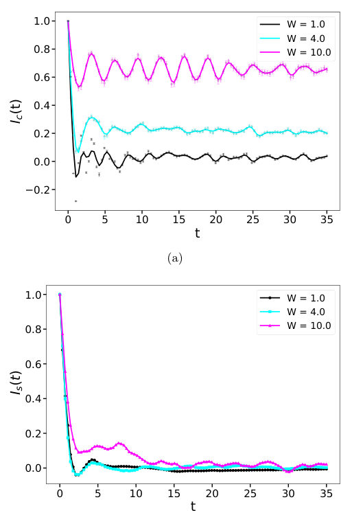
<figcaption class="paper-figure-caption"><b>Fig 1.</b> FIG. 1: Time evolution of (a) Charge Imbalance IC(t) and (b) Spin Imbalance IS(t) for system sizes L = 12 at J = 1, U = 5 and disorder strengths W = 1.0, 4.0, 10.0.</figcaption>
</figure>
<figure class="paper-figure-card">
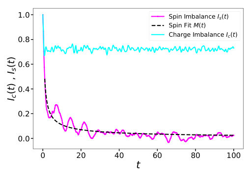
<figcaption class="paper-figure-caption"><b>Fig 2.</b> FIG. 2: The spin and charge imbalance of L = 12 at J=1, U = 4 and disorder strength W = 14.0 with fitted algebraic form M(t).</figcaption>
</figure>
<figure class="paper-figure-card">
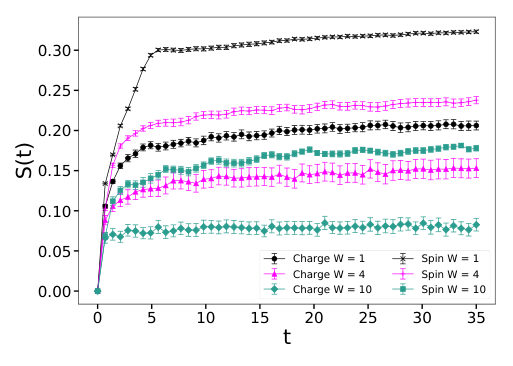
<figcaption class="paper-figure-caption"><b>Fig 3.</b> FIG. 4: Time evolution of charge and spin entanglement entropy Sc(t) and Ss(t) respectively for system sizes L = 8 , J = 1.0,U = 5.0 at disorder strength W = 1.0, 4.0, 10.0.</figcaption>
</figure>
<figure class="paper-figure-card">
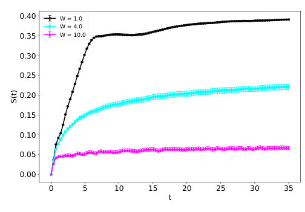
<figcaption class="paper-figure-caption"><b>Fig 4.</b> FIG. 3: (a) Entanglement entropy S(t) as a function of time for different interaction strengths U = 0, 1, 5, 10 at fixed disorder W = 10 at L = 12. (b) Entanglement entropy S(t) of L = 10 for different disorder strengths W. The transition from rapid growth (ergodic phase) to slow logarithmic growth (many-body localized phase) is clearly visible.</figcaption>
</figure>
</div>

<p><strong>Summary.</strong> This work examines the non-equilibrium dynamics of the disordered 1D Fermi-Hubbard model to study Many-Body Localization. By tracking imbalance and entanglement entropy, the authors demonstrate a transition from thermalizing (ergodic) behavior at weak disorder to a non-ergodic state at strong disorder. Crucially, they find evidence of partial decoupling between charge and spin degrees of freedom in this localized regime.</p>
<p><strong>Why it may be interesting.</strong> The interplay between disorder, interactions, and dimensionality in determining thermalization pathways is central to modern condensed matter theory, making this highly relevant for understanding strongly correlated quantum materials.</p>
<details>
<summary>Detailed structure</summary>
<p><strong>Main problem.</strong> The study investigates the non-equilibrium dynamics and the breakdown of thermalization in the presence of disorder, specifically focusing on the phenomenon of Many-Body Localization (MBL).</p>
<p><strong>Main result.</strong> The system exhibits a crossover from ergodic to non-ergodic behavior controlled by disorder strength, revealing partial decoupling between charge and spin sectors.</p>
<p><strong>Method.</strong> The analysis uses time evolution simulations following a quantum quench, employing observables like sublattice imbalance and bipartite entanglement entropy.</p>
<p><strong>Model / system.</strong> The model is the disordered one-dimensional Fermi-Hubbard model, described by a Hamiltonian including tunneling, on-site interaction (U), and random on-site disorder potential (V_i).</p>
<p><strong>Key observables.</strong> Sublattice imbalance ($I(t)$), Spin-Charge Imbalance ($I_c(t), I_s(t)$), and Bipartite Entanglement Entropy ($S(t)$).</p>
<p><strong>Important parameters / regimes.</strong> Disorder strength ($W$), Interaction strength ($U$), and the initial state (e.g., Charge-Density-Wave state).</p>
<p><strong>Assumptions / limitations.</strong> The analysis relies on characterizing the dynamics through specific conserved quantities and entanglement measures, noting that complete MBL requires specific symmetry breaking.</p>
<p><strong>Figures summary.</strong> Figures illustrate the time evolution of charge and spin imbalances for varying disorder strengths, showing decay in weak disorder and persistence in strong disorder. Entanglement entropy plots show characteristic logarithmic growth in the localized phase.</p>
<p><strong>Paper structure.</strong> The paper analyzes the system dynamics by first establishing the Hamiltonian and key observables. It then contrasts the weak disorder (ergodic) regime with the strong disorder (non-ergodic) regime using imbalance measurements, followed by an analysis of entanglement entropy to confirm the MBL signatures.</p>
</details>
<details>
<summary>Abstract</summary>
<p>We investigate the non-equilibrium dynamics of the disordered one-dimensional Fermi-Hubbard model with a focus on many-body localization. The system is initialized in a charge-density-wave-state, and its time evolution is analyzed through sublattice imbalance (spin and charge), and bipartite entanglement entropy. A clear crossover from ergodic to non-ergodic behavior is observed with increasing disorder strength. In the weak disorder regime, rapid decay of imbalance and the fast growth of entanglement indicate efficient thermalization. In contrast, a strong disorder leads to persistent imbalance and slow dynamics, signaling the breakdown of ergodicity. The charge and spin sectors exhibit distinct relaxation behavior, providing evidence for partial decoupling between these degrees of freedom. Furthermore, in the interacting regime, the entanglement entropy shows slow logarithmic growth, reflecting the dephasing-driven dynamics characteristic of the many-body localized phase. These results highlight the interplay between disorder and interactions in determining the dynamical properties of the system and establish robust signatures of many-body localization in the Fermi-Hubbard model.</p>
</details>
<p><sub><a href="#top">↑ back to top</a></sub></p>

<p><a id="paper-2606.04724"></a></p>
<h3 id="local-to-global-heating-crossover-in-chains-of-nanomagnets-a-two-scale-analytical-framework"><a href="http://arxiv.org/abs/2606.04724v1">Local-to-global heating crossover in chains of nanomagnets: A two-scale analytical framework</a></h3>
<p><strong>Authors:</strong> H. Kachkachi<br>
<strong>Type:</strong> theory · <strong>Category:</strong> statistical mechanics · <strong>PDF:</strong> <a href="https://arxiv.org/pdf/2606.04724v1">https://arxiv.org/pdf/2606.04724v1</a><br>
<strong>Analysis basis:</strong> full PDF text, analyzed in chunks
<strong>Topic relevance:</strong> <code>methods for driven-dissipative</code> <strong>3/5</strong> · <code>non-equilibrium dynamics</code> <strong>3/5</strong> · <code>spintronics-quantum-optics interface</code> <strong>3/5</strong> · <code>Keldysh / 2PI / non-Gaussian methods</code> <strong>2/5</strong> · <code>correlated / nonlocal dissipation</code> <strong>2/5</strong> · <code>driven-dissipative phase transition</code> <strong>2/5</strong> · <code>exotic spin models in light-matter</code> <strong>2/5</strong> · <code>non-equilibrium universality</code> <strong>2/5</strong> · <code>Frenkel-Kontorova</code> <strong>1/5</strong> · <code>analog quantum simulation</code> <strong>1/5</strong></p>
<div class="figure-strip-hint">↔ Scroll figures horizontally</div>
<div class="paper-figures-scroll">
<figure class="paper-figure-card">
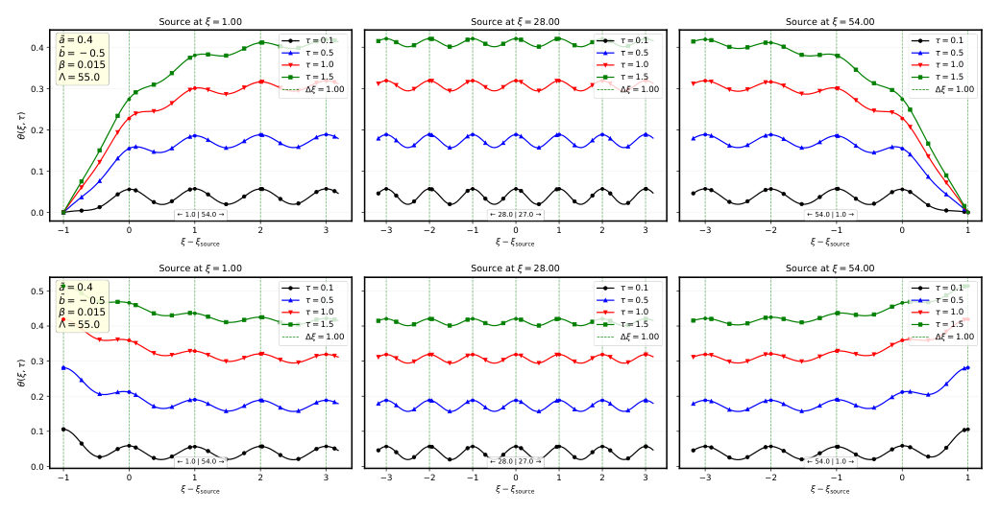
<figcaption class="paper-figure-caption"><b>Fig 1.</b> FIG. 1: Local temperature profiles θ(ξ, τ) around three source sites (ξ = 1, 28, 54) at instants τ = 0.1, 0.5, 1.0, 1.5 for the illustrative parameter set (Table III). Vertical dashed lines mark the interparticle spacing ∆ξ = 1. (Upper panel) Dirichlet BCs. (Lower panel) Neumann BCs.</figcaption>
</figure>
<figure class="paper-figure-card">
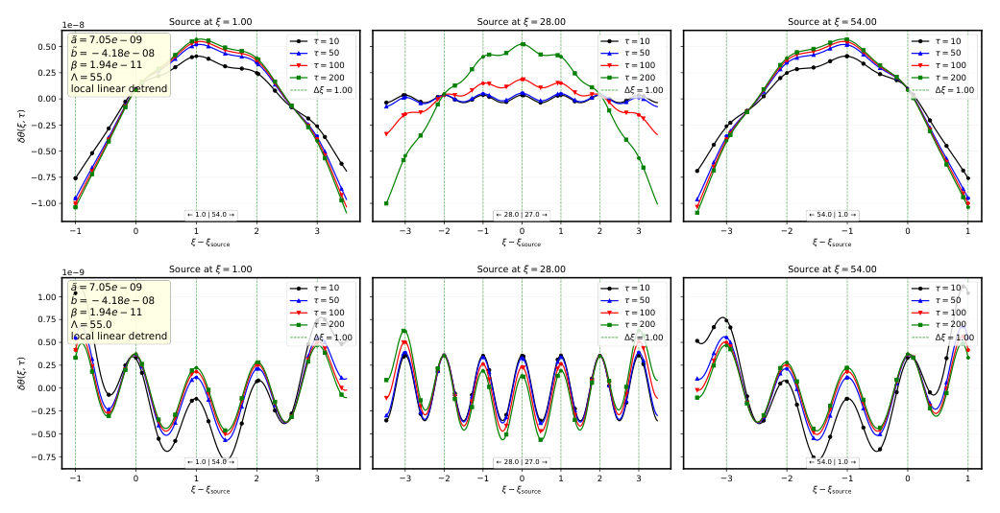
<figcaption class="paper-figure-caption"><b>Fig 2.</b> FIG. 2: Detrended local profiles δθ(ξ, τ) around three source sites (ξ = 1, 28, 54) for the physical magnetite–PMMA parameter set (Table I) at τ = 10, 50, 100, 200. (Upper panel) Dirichlet BCs. (Lower panel) Neumann BCs.</figcaption>
</figure>
<figure class="paper-figure-card">
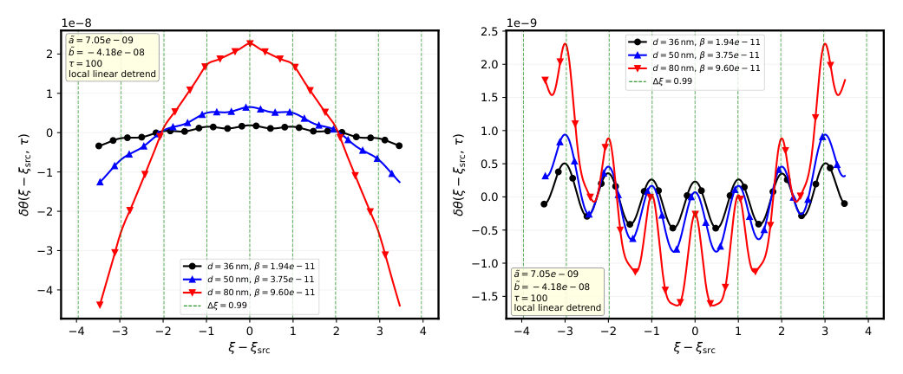
<figcaption class="paper-figure-caption"><b>Fig 3.</b> FIG. 3: Local profiles at the central source vs. interparticle separation d. Detrended profile δθ(ξ −ξsrc, τ) for the physical magnetite–PMMA parameter set (same as Fig. 2) at τ = 100, for d = 36, 50, 80 nm. Note that β ∝d2 and Λ = L/d vary with d; the annotation box shows the reference values at d = 36 nm. (Left panel) Dirichlet BCs. (Right panel) Neumann BCs.</figcaption>
</figure>
<figure class="paper-figure-card">
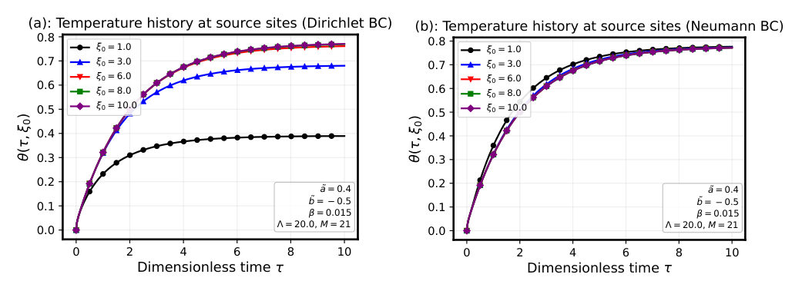
<figcaption class="paper-figure-caption"><b>Fig 4.</b> FIG. 4: Temperature history θ(τ) at five source positions from near-edge (ξ0 = 1) to chain centre (ξ0 = 10) (Λ = 20, N = 21, ˜a = 0.4, ˜b = −0.5, β = 0.015).</figcaption>
</figure>
<figure class="paper-figure-card">
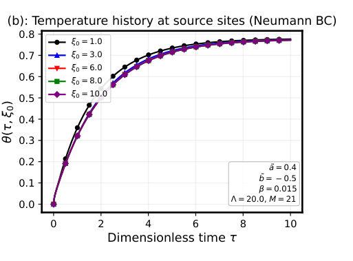
<figcaption class="paper-figure-caption"><b>Fig 5.</b> Figure 6 shows θ(ξ, τ) at τ = 0.25, 0.5, 1.0, 2.0 for Λ = 42, N = 7, ∆ξ = 7, ˜b = −0.52, β = 0.017 (localized regime, well below ˜bc). Both panels share the same set of source positions; the faint vertical dashed lines mark each source site for orientation. Under DBC [Fig. 6, left], the profiles grow uniformly across the interior of the chain, with the edge sources visibly suppressed relative to the bulk. We see that the envelope of the peaks is nearly flat in the interior at each time, thus confirming that the fundamental Dirich- let mode sin(πξ/Λ) spreads the heating broadly. On the other hand, individual source peaks are resolved. Indeed, since the inter-particle spacing ∆ξ = 7 exceeds...</figcaption>
</figure>
</div>

<p><strong>Summary.</strong> This work establishes a comprehensive two-scale analytical framework to model heat transfer in nanomagnet chains under alternating magnetic fields. By rigorously coarse-graining the nanoscale physics, the authors predict that realistic systems exhibit collective heating, with temperature fluctuations at the microkelvin level. The methodology is valuable for understanding energy dissipation in complex, coupled mesoscopic systems.</p>
<p><strong>Why it may be interesting.</strong> The rigorous development of a multi-scale, non-equilibrium thermal transport model, especially one that quantifies the crossover between local and global energy dissipation, provides advanced tools applicable to open quantum systems where environmental coupling and spatial averaging are crucial.</p>
<details>
<summary>Detailed structure</summary>
<p><strong>Main problem.</strong> The paper develops a two-scale framework to study heat generation and thermal transport in chains of nanomagnets subjected to an alternating magnetic field, focusing on the crossover between localized and global heating regimes.</p>
<p><strong>Main result.</strong> For realistic magnetic hyperthermia systems, the model predicts the system operates in a collective heating regime, with local temperature variations at the $\sim\mu	ext{K}$ level, which is currently experimentally unresolvable.</p>
<p><strong>Method.</strong> The authors employ a rigorous two-scale analytical formalism involving spatial and temporal coarse-graining, solving the resulting coupled equations using modal decomposition.</p>
<p><strong>Model / system.</strong> The system consists of one-dimensional chains of nanomagnets (e.g., magnetite) embedded in a matrix, where heat generation is modeled as a localized, temperature-dependent source term governed by magnetic losses.</p>
<p><strong>Key observables.</strong> Spatial correlation length, temperature variance, and the crossover condition governed by the competition between heat generation, diffusion, and dipolar coupling.</p>
<p><strong>Important parameters / regimes.</strong> Nanoscale volumetric loss coefficient ($L_m$), macroscopic loss coefficient ($L_N$), Knudsen number ($Kn$), and the dimensionless coupling strength ($\gamma$).</p>
<p><strong>Assumptions / limitations.</strong> The continuum Fourier description is valid because the Knudsen number is much less than one ($Kn \ll 1$) for the matrices considered.</p>
<p><strong>Figures summary.</strong> Figures illustrate the dependence of Specific Loss Power (SLP) on frequency and volume, and compare the thermal behavior under Dirichlet (fixed boundary) versus Neumann (insulated boundary) conditions.</p>
<p><strong>Paper structure.</strong> The paper progresses from deriving the nanoscale heat equation, through the rigorous process of spatial and temporal coarse-graining to obtain an assembly-scale equation, and finally analyzing the stability and crossover criteria using modal decomposition.</p>
</details>
<details>
<summary>Abstract</summary>
<p>We develop a two-scale analytical formalism to study heat generation and thermal transport in one-dimensional systems of nanomagnets subjected to a uniform alternating magnetic field. At the nanoscale, each nanomagnet acts as a localized, temperature-dependent heat source governed by its magnetic response, dipolar interactions, and interfacial coupling to the matrix, characterized by a nanoscale volumetric loss coefficient $L_m$. After spatial and temporal averaging, we obtain a coarse-grained assembly-scale equation with effective heating terms and a macroscopic loss coefficient $L_N$.   Using modal decomposition, we solve both equations exactly under Dirichlet and Neumann boundary conditions and establish explicit conditions for a local-to-global heating crossover; this is governed by the competition between heat generation, diffusion, dipolar coupling, and hierarchical losses. The crossover is quantified through the spatial correlation length and temperature variance, with stability criteria incorporating both diffusion and nanoscale losses. The coarse-graining procedure is derived rigorously, and its systematic approximation errors are quantified.   For prototypical magnetic hyperthermia systems, such as magnetite nanomagnets in water, our formalism reveals that realistic parameters place these systems firmly in the collective heating regime, with local temperature variations at the $\simμ$K level, which is currently unresolvable experimentally. The continuum Fourier description used here is validated by a Knudsen-number analysis ($\mathrm{Kn} \ll 1$ for amorphous polymer and aqueous matrices).</p>
</details>
<p><sub><a href="#top">↑ back to top</a></sub></p>

<p><a id="paper-2606.04341"></a></p>
<h3 id="perfect-nonreciprocal-axion-polaritons"><a href="http://arxiv.org/abs/2606.04341v1">Perfect Nonreciprocal Axion-polaritons</a></h3>
<p><strong>Authors:</strong> Abhinava Chatterjee, Chao-Xing Liu<br>
<strong>Type:</strong> theory · <strong>Category:</strong> other · <strong>PDF:</strong> <a href="https://arxiv.org/pdf/2606.04341v1">https://arxiv.org/pdf/2606.04341v1</a><br>
<strong>Analysis basis:</strong> full PDF text, analyzed in chunks
<strong>Topic relevance:</strong> <code>driven-dissipative phase transition</code> <strong>3/5</strong> · <code>interference shaping light</code> <strong>2/5</strong> · <code>non-equilibrium dynamics</code> <strong>2/5</strong> · <code>non-equilibrium universality</code> <strong>2/5</strong> · <code>Keldysh / 2PI / non-Gaussian methods</code> <strong>1/5</strong> · <code>analog quantum simulation</code> <strong>1/5</strong> · <code>correlated / nonlocal dissipation</code> <strong>1/5</strong> · <code>correlated cavity matter</code> <strong>1/5</strong> · <code>methods for driven-dissipative</code> <strong>1/5</strong> · <code>spintronics-quantum-optics interface</code> <strong>1/5</strong></p>
<div class="figure-strip-hint">↔ Scroll figures horizontally</div>
<div class="paper-figures-scroll">
<figure class="paper-figure-card">
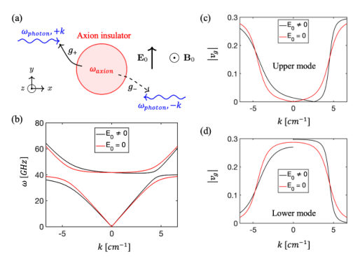
<figcaption class="paper-figure-caption"><b>Fig 1.</b> FIG. 1. (a) The dynamical axion mode interacting with pho- tons. In the presence of both external electric and magnetic field E0, B0 along y and z directions respectively, the photons from the right (ωphoton, −k) and from the left (ωphoton, +k) couple to the axion mode with different coupling strengths g+ ̸= g−(defined in the section perfect nonreciprocity). (b) The frequency of the axion-polariton modes in the presence (E0 ̸= 0 - black) and absence of an external electric field (E0 = 0 - red) as a function of momentum k. The momen- tum axis is in units of cm−1, obtained using the conversion 1 GHz = 0.0333 cm−1. The magnitude of the group veloc- ity |vg| of the (c) upper and (d) lower...</figcaption>
</figure>
<figure class="paper-figure-card">
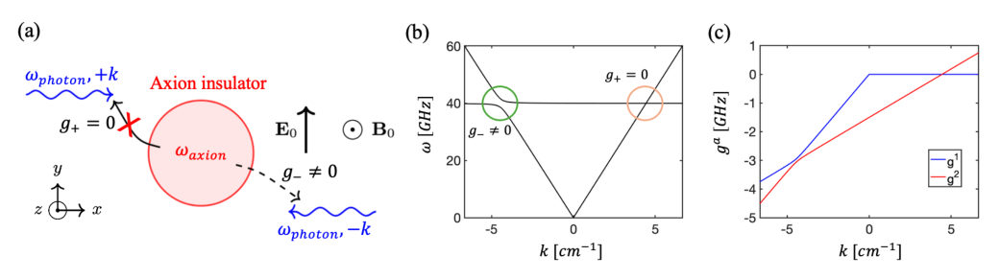
<figcaption class="paper-figure-caption"><b>Fig 2.</b> FIG. 2. (a) Perfect nonreciprocity at critical electromagnetic fields Ec 0, Bc 0 given by Ec 0 = c′Bc 0. (b) The axion-polariton dispersion at the critical external field. (c) The axion-photon coupling strengths ga(k) as a function of momentum k at critical electromagnetic fields Ec 0, Bc 0. We use E = c′B, B = 1.5 GHz, m = 40 GHz, v = 0.005 and c′ = 0.3.</figcaption>
</figure>
<figure class="paper-figure-card">
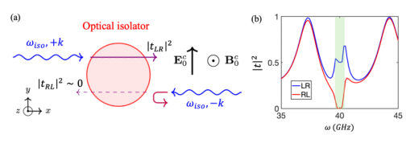
<figcaption class="paper-figure-caption"><b>Fig 3.</b> FIG. 3. (a) The axion insulator as an optical isolator. (b) The transmissivities |tLR|2 and |tRL|2 as a function of photon frequency ω. We use E = c′B , B = 1.5 GHz, m = 40 GHz, v = 0 and c′ = 0.3.</figcaption>
</figure>
</div>

<p><strong>Summary.</strong> This paper theoretically investigates axion-polaritons in a dynamical axion insulator subjected to external electric and magnetic fields. It demonstrates that these systems exhibit intrinsic nonreciprocity, leading to the prediction of an optical isolator. The effect is realized in a 'perfect nonreciprocity' regime where one direction of light propagates freely while the opposite direction is strongly attenuated.</p>
<p><strong>Why it may be interesting.</strong> This work is highly relevant to quantum optics and open quantum systems as it demonstrates a controllable, engineered mechanism for directional light control (optical isolation) using fundamental material properties (axion coupling).</p>
<details>
<summary>Detailed structure</summary>
<p><strong>Main problem.</strong> The paper aims to characterize nonreciprocal axion-polaritons, which are hybrid modes exhibiting directional asymmetry in their dispersion relation ($\omega(k) 
eq \omega(-k)$).</p>
<p><strong>Main result.</strong> They identify a regime of perfect nonreciprocity where one direction's photon decouples from the axion while the counter-propagating photon strongly hybridizes, realizing an optical isolator.</p>
<p><strong>Method.</strong> The analysis involves solving coupled equations of motion for axion and photon fields, deriving dispersion relations, and calculating transmission/reflection coefficients using boundary value problems.</p>
<p><strong>Model / system.</strong> The system is a dynamical axion insulator coupled to electromagnetic fields, described by a Lagrangian involving axion fluctuations ($  heta$) and photon fields ($A$). Nonreciprocity requires breaking both inversion and time-reversal symmetry using external $\mathbf{E}_0$ and $\mathbf{B}_0$ fields.</p>
<p><strong>Key observables.</strong> Dispersion relation $\omega(k)$, group velocity asymmetry $|\mathbf{v}_g(\mathbf{k})|$, and transmission coefficients $|t_{LR}|^2$ vs. $|t_{RL}|^2$.</p>
<p><strong>Important parameters / regimes.</strong> The perfect nonreciprocity limit is achieved when the external fields satisfy $E = c'B$. The analysis also considers the axion damping rate $\Gamma$.</p>
<p><strong>Assumptions / limitations.</strong> Approximations include $v \ll c'$ and the use of a small dissipative term ($\Gamma$) to model finite axion quasiparticle lifetime.</p>
<p><strong>Figures summary.</strong> Figures illustrate the coupling mechanism showing different coupling strengths for right- and left-moving photons, and show the calculated transmission coefficients $|t_{LR}|^2$ and $|t_{RL}|^2$ for both nonreciprocal ($E=c'B$) and reciprocal ($E=0$) cases.</p>
<p><strong>Paper structure.</strong> The paper progresses from establishing the coupled equations and the requirement for nonreciprocity, to calculating the dispersion relation and coupling strengths, and finally solving the boundary value problem for transmission/reflection coefficients to demonstrate the optical isolator effect.</p>
</details>
<details>
<summary>Abstract</summary>
<p>Dynamical axion describes a massive axion quasiparticle that arises from fluctuations of the magnetic order parameter. These fluctuations couple to electromagnetic fields, forming axion-polaritons -- collective modes that are physically magnon-polaritons. We show that under appropriate static external electric and magnetic fields, axion-polaritons acquire a nonreciprocal dispersion, $ω(\textbf{k}) \neq ω(-\textbf{k})$, arising intrinsically from direction-dependent axion-photon coupling. Strikingly, we identify a regime of \textit{perfect nonreciprocity} in which the photon propagating in one direction is completely decoupled from the axion while the counter-propagating photon hybridizes strongly. Furthermore, the nonreciprocal dispersion manifests as an optical isolator -- a device transmitting light preferentially in one direction. Our results establish nonreciprocal axion-polaritons as a powerful probe of axion quasiparticles and suggest experimentally accessible routes for their detection.</p>
</details>
<p><sub><a href="#top">↑ back to top</a></sub></p>

<p><a id="paper-2606.04919"></a></p>
<h3 id="very-strong-light-matter-coupling-in-patterned-gaas-heterostructures"><a href="http://arxiv.org/abs/2606.04919v1">Very strong light-matter coupling in patterned GaAs heterostructures</a></h3>
<p><strong>Authors:</strong> David de la Fuente Pico, Johannes Bürger, Antonio Gianfrate, Jesper Levinsen, Meera M. Parish, Daniele Sanvitto, Francesca Maria Marchetti, Dario Ballarini<br>
<strong>Type:</strong> both · <strong>Category:</strong> other · <strong>PDF:</strong> <a href="https://arxiv.org/pdf/2606.04919v1">https://arxiv.org/pdf/2606.04919v1</a><br>
<strong>Analysis basis:</strong> full PDF text, analyzed in chunks
<strong>Topic relevance:</strong> <code>analog quantum simulation</code> <strong>3/5</strong> · <code>correlated cavity matter</code> <strong>3/5</strong> · <code>quantum optics experiment</code> <strong>2/5</strong> · <code>Keldysh / 2PI / non-Gaussian methods</code> <strong>1/5</strong> · <code>Tavis-Cummings &amp; cavity-many-emitter</code> <strong>1/5</strong> · <code>driven-dissipative phase transition</code> <strong>1/5</strong> · <code>interference shaping light</code> <strong>1/5</strong> · <code>methods for driven-dissipative</code> <strong>1/5</strong></p>
<div class="figure-strip-hint">↔ Scroll figures horizontally</div>
<div class="paper-figures-scroll">
<figure class="paper-figure-card">
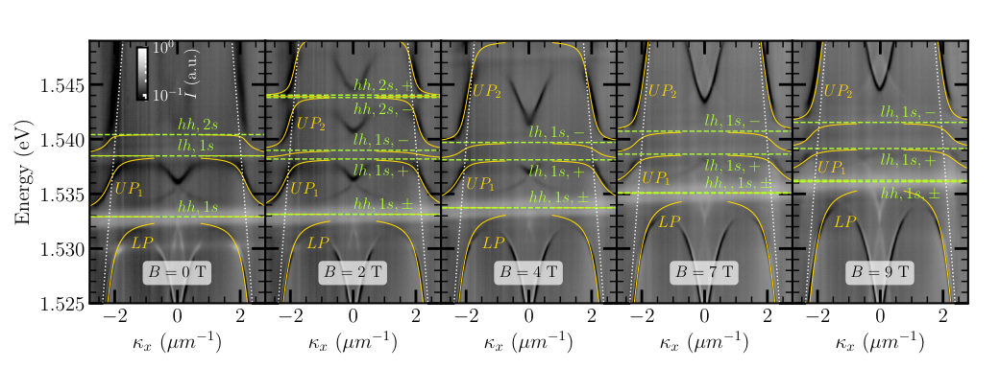
<figcaption class="paper-figure-caption"><b>Fig 1.</b> FIG. 1. Reflectance spectra in the very strong coupling regime as a function of the photon in-plane wave vector κx for increasing values of the magnetic field B. The polariton modes display anticrossing between the TE1,± waveguide modes (white dotted lines) and the the hh and lh exciton energies of states with different polarization, Ehh,ns,± and Elh,1s,± measured in weak coupling (horizontal dashed lines). Solid (orange) lines are the theoretically predicted polariton energies.</figcaption>
</figure>
<figure class="paper-figure-card">
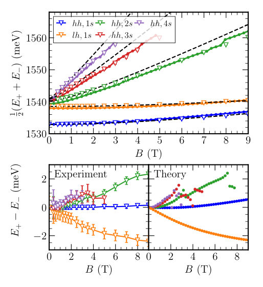
<figcaption class="paper-figure-caption"><b>Fig 2.</b> FIG. 2. Top panel: Experimental exciton diamagnetic shift (E+ + E−)/2 as a function of magnetic field for the first five states (triangles). Points show theoretical results from the Luttinger Hamiltonian model without adjustable parameters (see text and Ref. [23]), while dashed lines correspond to an effective 2D exciton model with fitted Rydberg energies and reduced masses (see [22]). Bottom panels: Exciton Zeeman splitting E+ −E−for the first five excited states.</figcaption>
</figure>
<figure class="paper-figure-card">
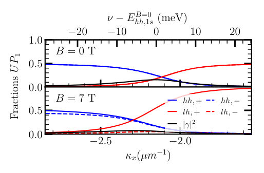
<figcaption class="paper-figure-caption"><b>Fig 3.</b> FIG. 3. Exciton |Xσ,±|2 = ⟨0| ˆ Xσ,± ˆ X† σ,±|0⟩and photon |γ|2</figcaption>
</figure>
<figure class="paper-figure-card">
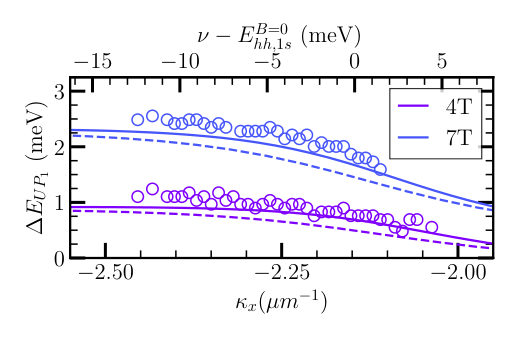
<figcaption class="paper-figure-caption"><b>Fig 4.</b> FIG. 4. Comparison between the experimental (circles) and theoretical (solid lines) energy shift ∆E = E(B) −E(B=0) of the polariton state UP1 at two magnetic fields for the TE1,+ mode. Dashed lines show calculations including light coupling perturbatively (see text).</figcaption>
</figure>
</div>

<p><strong>Summary.</strong> This paper investigates strong light-matter coupling in patterned GaAs quantum well waveguides, observing the hybridization of heavy- and light-hole excitons into polaritons. By combining advanced magneto-optical measurements with a fully microscopic theoretical model, the authors demonstrate that the quantum well width can precisely engineer these coupled states. This work is crucial for understanding and controlling optical nonlinearities in solid-state quantum emitters.</p>
<p><strong>Why it may be interesting.</strong> This work is highly relevant to AMO physics and quantum optics as it deals with engineered light-matter interactions in solid-state systems, providing quantitative control over exciton-photon hybridization using external fields and material design.</p>
<details>
<summary>Detailed structure</summary>
<p><strong>Main problem.</strong> The study aims to demonstrate and theoretically describe the physics of very strong light-matter coupling in patterned GaAs heterostructures, specifically focusing on the hybridization between heavy-hole and light-hole excitons.</p>
<p><strong>Main result.</strong> The authors successfully demonstrated the hybridization of heavy- and light-hole excitons into a single polariton state and developed a microscopic theory that accurately describes this coupling, showing that quantum well width is a key control parameter.</p>
<p><strong>Method.</strong> The research combines polarization-resolved white-light reflection measurements with the development of a fully microscopic theory that solves the coupled exciton-photon Hamiltonian.</p>
<p><strong>Model / system.</strong> The system is a patterned GaAs/AlGaAs waveguide heterostructure containing multiple quantum wells. The theoretical framework uses a Luttinger Hamiltonian for the excitons coupled to the TE waveguide mode, analyzed in a 2D effective model.</p>
<p><strong>Key observables.</strong> Polariton energy spectra (measured via reflectance), Rabi couplings ($\Omega_{hh}, \Omega_{lh}$), and the composition (photon/exciton fractions) of the resulting polariton states.</p>
<p><strong>Important parameters / regimes.</strong> Quantum well width ($d_z$), external magnetic field ($B$ up to $9 	ext{ T}$), and the degree of light-matter coupling strength.</p>
<p><strong>Assumptions / limitations.</strong> The analysis often simplifies the full Hamiltonian by using an effective 2D model, neglecting certain off-diagonal Luttinger terms, and assuming TE mode dominance.</p>
<p><strong>Figures summary.</strong> Figures illustrate polariton mode anticrossing vs. in-plane wave vector ($\kappa_x$) for varying magnetic fields, and show the exciton/photon composition of the upper polariton states (UP1, UP2) as a function of detuning and magnetic field.</p>
<p><strong>Paper structure.</strong> The paper progresses from establishing the physical system and experimental setup to deriving the full Hamiltonian, developing a microscopic 2D model, extracting key parameters (like Rabi couplings) by fitting experimental data, and finally analyzing the energy shifts and state composition in the strong coupling regime.</p>
</details>
<details>
<summary>Abstract</summary>
<p>The very strong light-matter coupling regime enables the non-perturbative modification of matter properties via light. Using a patterned GaAs/AlGaAs waveguide with twelve wide quantum wells, we demonstrate hybridization of heavy- and light-hole excitons within a single polariton state and show that, at finite magnetic field, the presence of the light-hole exciton suppresses coupling to the heavy-hole Rydberg excitons and unbound scattering states. We develop a fully microscopic theory that accounts for the combined effects of the magnetic field and light-matter coupling on the excitons, providing an accurate description of the experimental results beyond a perturbative coupled-oscillator framework. This identifies quantum well width as a key control parameter for engineering the light-induced hybridization of matter wave functions in polaritons, which, in turn, can play a crucial role in the optical non-linearities.</p>
</details>
<p><sub><a href="#top">↑ back to top</a></sub></p>

<p><a id="paper-2606.05057"></a></p>
<h3 id="bulk-and-surface-excitons-in-the-van-der-waals-magnet-crsbr-magneto-optical-studies-to-55-tesla"><a href="http://arxiv.org/abs/2606.05057v1">Bulk and surface excitons in the van der Waals magnet CrSBr: Magneto-optical studies to 55 tesla</a></h3>
<p><strong>Authors:</strong> Junho Choi, Yihyun Moon, Doohyeon Lee, Iva Plutnarova, Zdenek Sofer, Vinod M. Menon, Scott A. Crooker<br>
<strong>Type:</strong> experiment · <strong>Category:</strong> other · <strong>PDF:</strong> <a href="https://arxiv.org/pdf/2606.05057v1">https://arxiv.org/pdf/2606.05057v1</a><br>
<strong>Analysis basis:</strong> full PDF text, analyzed in chunks
<strong>Topic relevance:</strong> <code>exotic spin models in light-matter</code> <strong>3/5</strong> · <code>spintronics-quantum-optics interface</code> <strong>3/5</strong> · <code>analog quantum simulation</code> <strong>1/5</strong> · <code>quantum optics experiment</code> <strong>1/5</strong></p>
<div class="figure-strip-hint">↔ Scroll figures horizontally</div>
<div class="paper-figures-scroll">
<figure class="paper-figure-card">

<figcaption class="paper-figure-caption"><b>Fig 1.</b> FIG. 1. a) Illustration of bulk and surface excitons (Xbulk, Xsurf) in a hBN-encapsulated N-layer CrSBr sample. Exci- tons are largely confined within individual monolayers, due to weak interlayer coupling. Excitons in surface layers see a different local dielectric environment due to the neighboring hBN (ϵhBN &lt; ϵCrSBr), leading to weaker screening and slightly different resonance energy. Blue, yellow, red spheres denote Cr, S, Br atoms. b) Schematic of the sample-on-fiber assem- bly, which enables absorbance spectroscopy of exfoliated vdW materials in high (pulsed) magnetic fields (see main text). c) Photograph of an encapsulated 4L CrSBr sample, affixed over the fiber’s 5 µm diameter core...</figcaption>
</figure>
<figure class="paper-figure-card">
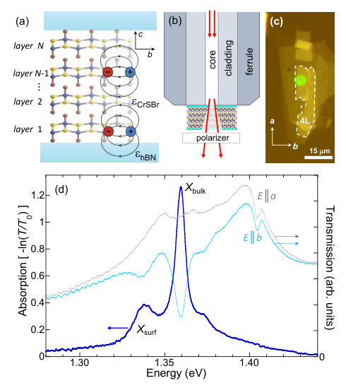
<figcaption class="paper-figure-caption"><b>Fig 2.</b> Figure 1d shows the optical absorption spectrum, cal- culated as −ln(T/T0), of a 4-layer CrSBr sample at low temperature (4 K) and zero field (B=0). To best cap- ture the exciton absorption, the transmission spectrum T and the reference spectrum T0 were acquired using light linearly polarized along the crystal’s ˆb and ˆa axis (where band-edge exciton absorption in CrSBr is max-</figcaption>
</figure>
<figure class="paper-figure-card">
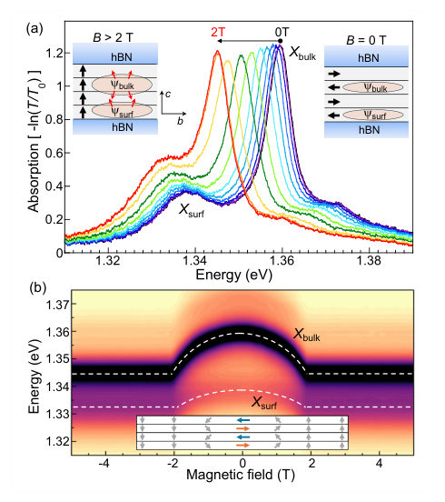
<figcaption class="paper-figure-caption"><b>Fig 3.</b> FIG. 2. a) Low-temperature absorption spectra from 4L CrSBr with increasing B (∥ˆc) from 0 →2 T (in steps of ∼0.2 T). Both Xbulk and Xsurf resonances redshift to lower energies as the CrSBr reorients from antiferromagnetic to fer- romagnetic order. The redshift of Xsurf (∼6 meV) is slightly less than half that of Xbulk (∼14 meV). The red ovals in the cartoon insets represent their spatial envelope wavefunctions ψsurf(r) and ψbulk(r) within the CrSBr sample, and depict how ψbulk(r) delocalizes in both +ˆc and −ˆc directions when interlayer coupling becomes more likely in the ferromagnetic state, whereas ψsurf(r) can delocalize in only the +ˆc direction (or −ˆc for the top surface), leading...</figcaption>
</figure>
<figure class="paper-figure-card">
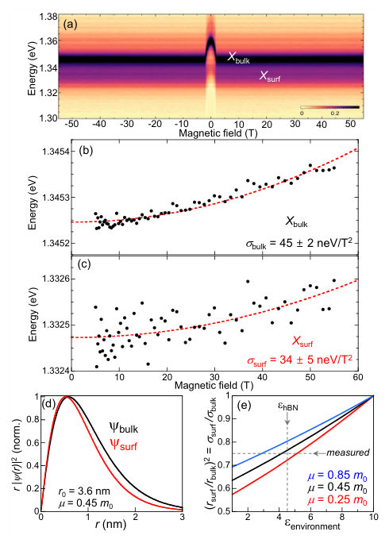
<figcaption class="paper-figure-caption"><b>Fig 4.</b> FIG. 3. a) Absorption of the 4L CrSBr sample in high mag- netic fields to ±55 T, using circularly polarized light. b,c) The quadratic diamagnetic shift of the bulk and surface ex- citon resonances. The diamagnetic shift of Xsurf is 25% less than that exhibited by Xbulk, consistent with the reduced dielectric screening of Xsurf due to the hBN encapsulation. d) Calculated radial probability density of bulk and surface exciton wavefunctions in hBN-encapsulated CrSBr (see main text). e) Calculated ratio σsurf/σbulk for CrSBr, versus di- electric constant of the surrounding environment, for different exciton reduced masses µ.</figcaption>
</figure>
<figure class="paper-figure-card">
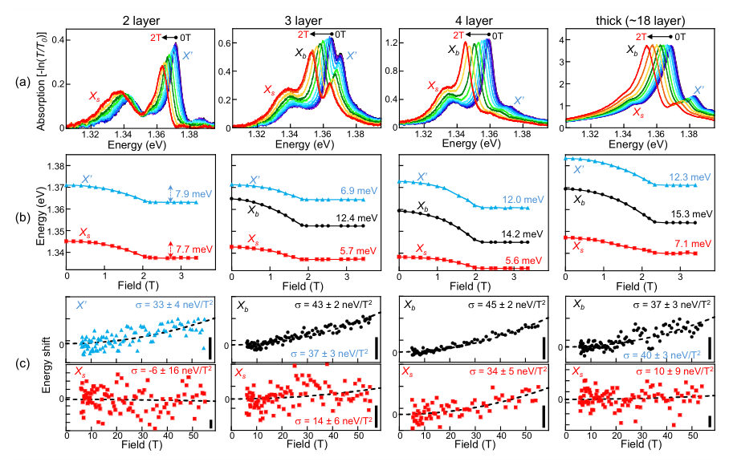
<figcaption class="paper-figure-caption"><b>Fig 5.</b> FIG. 4. a) The four panels show low-temperature optical absorption spectra from a 2L, 3L, 4L, and a thick (∼18L) CrSBr sample respectively, as B ∥ˆc increases from 0 →2 T (in steps of ≈0.2 T). Note that the 2L sample lacks the central absorption resonance from Xbulk, because no “bulk-like” layers exist in 2L CrSBr. b) These panels show the corresponding B-dependent energies of the absorption resonances. The net redshifts of the resonances (between 0 T and ∼2 T) are indicated. In all cases, the redshift of Xsurf is slightly less than half the redshift of Xbulk. c) These panels show the high-field diamagnetic shifts of these absorption resonances, along with best quadratic fits. Tick marks on...</figcaption>
</figure>
</div>

<p><strong>Summary.</strong> This research uses magneto-optical spectroscopy on few-layer CrSBr to distinguish between bulk and surface excitons. By measuring how two distinct exciton resonances shift under applied magnetic fields, the authors provide strong evidence that surface excitons are physically and electronically different from their bulk counterparts. This work advances the understanding of exciton physics in low-dimensional magnetic semiconductors.</p>
<p><strong>Why it may be interesting.</strong> The work provides a clear experimental demonstration of how dimensionality and local environment (dielectric screening) can lead to distinct, measurable quantum excitations (excitons) in 2D magnetic materials, which is highly relevant for designing novel quantum optical devices.</p>
<details>
<summary>Detailed structure</summary>
<p><strong>Main problem.</strong> To investigate and validate the existence and properties of distinguishable bulk and surface excitons in the van der Waals magnet CrSBr using magneto-optical measurements.</p>
<p><strong>Main result.</strong> The study confirms two distinct exciton resonances—a fundamental bulk exciton and a lower-energy surface exciton—whose differing responses to magnetic fields (redshift and diamagnetic shift) provide strong evidence for their distinct physical origins.</p>
<p><strong>Method.</strong> Polarized optical absorption spectroscopy was performed on few-layer CrSBr samples under varying magnetic fields, up to 55 Tesla.</p>
<p><strong>Model / system.</strong> The system is few-layer CrSBr, a 2D magnetic semiconductor. The model posits that weak inter-layer coupling confines excitons, leading to surface excitons experiencing a different local dielectric environment than the bulk-like excitons.</p>
<p><strong>Key observables.</strong> Exciton resonance energies ($  ext{X}<em ext_surf="ext{surf">{    ext{bulk}}$ vs. $   ext{X}</em>$) in high fields.}}$), redshift magnitude in low fields, and diamagnetic shift ($\Delta E_{ ext{dia}</p>
<p><strong>Important parameters / regimes.</strong> Magnetic field strength (up to 55 T), layer thickness (2L to 18L), and the difference in local dielectric environment between surface and bulk layers.</p>
<p><strong>Assumptions / limitations.</strong> The spectral differences are attributed to the distinct local dielectric environments experienced by surface versus bulk excitons.</p>
<p><strong>Figures summary.</strong> Figures illustrate optical absorption spectra showing two resonances ($    ext{X}<em ext_surf="ext{surf">{    ext{bulk}}$ and $   ext{X}</em>$) and demonstrate how their respective energies shift differently under applied magnetic fields (low-field redshift and high-field diamagnetic shift) as a function of layer number.}</p>
<p><strong>Paper structure.</strong> The paper systematically analyzes optical absorption spectra across varying layer thicknesses and magnetic fields. It first establishes the existence of two resonances, then uses low-field magneto-optics to compare redshift magnitudes, and finally uses high-field measurements to compare diamagnetic shifts, confirming the surface/bulk distinction.</p>
</details>
<details>
<summary>Abstract</summary>
<p>In thin layers of the 2D magnetic semiconductor CrSBr, very recent studies identified two distinct band-edge optical resonances, believed to arise from distinguishable bulk and surface excitons. This behavior reportedly originates from the highly anisotropic nature of CrSBr -- particularly in its antiferromagnetic state -- where excitons are effectively confined within individual monolayers, such that excitons in the two surface layers "see" a different local dielectric environment and have a lower resonance energy. To explore this scenario, here we investigate optical absorption properties of few-layer CrSBr in magnetic fields. In addition to the fundamental exciton resonance at ~1.36eV, we observe an absorption resonance ~20 meV lower in energy. Compared to the fundamental transition, this resonance redshifts only half as much in small magnetic fields that induce ferromagnetic order, while in high fields to 55T it exhibits a smaller diamagnetic shift. Both behaviors point to distinguishable populations of bulk and surface excitons in CrSBr.</p>
</details>
<p><sub><a href="#top">↑ back to top</a></sub></p>

<p><a id="paper-2606.05093"></a></p>
<h3 id="exchange-mediated-exciton-splitting-and-linear-dichroism-in-monolayer-transition-metal-dichalcogenide-induced-by-ferroelectric-substrates"><a href="http://arxiv.org/abs/2606.05093v1">Exchange-mediated exciton splitting and linear dichroism in monolayer transition metal dichalcogenide induced by ferroelectric substrates</a></h3>
<p><strong>Authors:</strong> Sudipta Kundu, Felipe H. da Jornada<br>
<strong>Type:</strong> theory · <strong>Category:</strong> other · <strong>PDF:</strong> <a href="https://arxiv.org/pdf/2606.05093v1">https://arxiv.org/pdf/2606.05093v1</a><br>
<strong>Analysis basis:</strong> full PDF text, analyzed in chunks
<strong>Topic relevance:</strong> <code>spintronics-quantum-optics interface</code> <strong>3/5</strong> · <code>Keldysh / 2PI / non-Gaussian methods</code> <strong>1/5</strong> · <code>analog quantum simulation</code> <strong>1/5</strong> · <code>driven-dissipative phase transition</code> <strong>1/5</strong> · <code>methods for driven-dissipative</code> <strong>1/5</strong></p>
<div class="figure-strip-hint">↔ Scroll figures horizontally</div>
<div class="paper-figures-scroll">
<figure class="paper-figure-card">
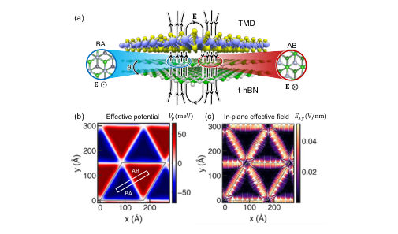
<figcaption class="paper-figure-caption"><b>Fig 1.</b> Figure 1: (a): Schematic of the device arrangement consisting of a t-hBN and a monolayer TMD, for example, MoS2. The left and right circular insets show the two ferroelectric stackings of bilayer hBN: AB and BA with alternating dipoles, which give rise to electric fields along the alternating direction perpendicular to the hBN plane. The black lines with arrows penetrating through the heterostructure represent the spatially varying electric field originating from the t-hBN. (b) Polarization potential map Vp due to the varying dipoles in a 0.8◦t-hBN. The large red and blue triangles correspond to the AB and BA domains, while the thin white region separating them is the domain wall (DW). The...</figcaption>
</figure>
<figure class="paper-figure-card">

<figcaption class="paper-figure-caption"><b>Fig 2.</b> Figure 2: (a): Schematic of the 1D approximation for Vp. The underlying color profile represents the varying Vp applied to the 1D supercell of MoS2. (b): Band structure of the MoS2 supercell including the effect of Vp (c) and (d): |ψK(r)|2 of the first three non- degenerate bands at the valence and conduction band edges, respectively. The isosurface is plotted up to 0.0001 e/Bohr3.</figcaption>
</figure>
<figure class="paper-figure-card">

<figcaption class="paper-figure-caption"><b>Fig 3.</b> Figure 3: (a): Absorption spectrum of MoS2/t-hBN encapsulated with hBN. The vertical dashed lines indicate the positions of the lowest energy bright XW and the lowest energy XCT, respectively. The inset focuses on the low energy bright XW’s, highlighting the two types: transverse (XW T ) and longitudinal (XW L ) excitons by orange and green dots, respectively. (b): Polar plot of the oscillator strengths corresponding to the excitons shown in the inset. 0◦direction corresponds to the direction of Vp. (c) and (d): Schematic of the electric field and probable excitons in the MoS2/t-hBN heterostructure stack when deposited on a bulk hBN substrate and when encapsulated by dielectric materials on...</figcaption>
</figure>
<figure class="paper-figure-card">

<figcaption class="paper-figure-caption"><b>Fig 4.</b> Figure 4: (a): Band dispersion of the valley antibonding (orange) and bonding (green) excitons in hBN encapsulated pristine TMDs. (b): Effective COM potential (grey) and the electron (blue) and hole (red) components of the ab initio XW T wavefunctions for hBN encapsulated heterostructure, averaged over two excitons localized at either DWs. (c) The ab initio energies corresponding to the first two bright excitons of both transverse and longitudinal series of hBN encapsulation are shown, setting the continuum at zero. (d) Exciton energies from the COM Hamiltonian model at the infinite limit. A schematic of the effective potential and the exciton wavefunctions in COM coordinates is shown.</figcaption>
</figure>
<figure class="paper-figure-card">

<figcaption class="paper-figure-caption"><b>Fig 5.</b> Figure 5: (a) Schematic of the device setup depicting the axes orientation. (b) and (c): Variation of Vp and Veff with increasing z from the equilibrium position of TMD on t-hBN.</figcaption>
</figure>
</div>

<p><strong>Summary.</strong> This theoretical study investigates how ferroelectric substrates induce novel excitonic states in 2D TMDs. Using advanced first-principles calculations, the authors predict that the electric field gradient at domain walls splits valley-degenerate excitons by several meV. This finding establishes a pathway for engineering robust, addressable two-level quantum systems for quantum information applications.</p>
<p><strong>Why it may be interesting.</strong> This work provides concrete, theoretically derived design rules for engineering quantum emitters (two-level systems) in solid-state platforms by leveraging built-in electric fields from ferroelectric substrates, which is highly relevant to quantum optics and solid-state quantum information.</p>
<details>
<summary>Detailed structure</summary>
<p><strong>Main problem.</strong> The study addresses fundamental challenges in controlling and addressing valley-polarized excitons in 2D TMDs, particularly concerning decoherence and energy splitting.</p>
<p><strong>Main result.</strong> The authors predict that the combination of spatial confinement at ferroelectric domain walls and intervalley exchange interactions can split valley-degenerate excitons by $\sim 3.1$ meV, creating addressable two-level systems.</p>
<p><strong>Method.</strong> The research employs a combination of first-principles electrostatic embedding approaches and large-scale GW plus Bethe-Salpeter equation (GW-BSE) calculations.</p>
<p><strong>Model / system.</strong> The physical system is a monolayer TMD (e.g., MoS2) heterostructured with a ferroelectric twisted bilayer hBN substrate. The model incorporates an effective polarization potential ($V_p$) derived from the substrate's ferroelectric domains (AB/BA).</p>
<p><strong>Key observables.</strong> Exciton types (Wannier vs. Charge-Transfer), exciton energy splitting ($\Delta E_{L-T}$), linear optical dichroism, and the spatial variation of the electrostatic potential ($V_p$).</p>
<p><strong>Important parameters / regimes.</strong> The splitting magnitude ($\sim 3.1$ meV), the width of the domain wall ($\sim 2$ nm), and the twist angle ($    heta \lesssim 1^\circ$) are critical parameters.</p>
<p><strong>Assumptions / limitations.</strong> The calculations rely on an <em>ab initio</em> electrostatic embedding approach to model the substrate potential, and the quasi-1D approximation is used to simplify the analysis along domain walls.</p>
<p><strong>Figures summary.</strong> Figures illustrate the device arrangement, the spatial potential map ($V_p$) showing AB/BA domains and domain walls, and the resulting exciton density distributions for different polarizations.</p>
<p><strong>Paper structure.</strong> The paper first establishes the physical system and the need to address exciton decoherence. It then details the computational methodology (electrostatic embedding, GW-BSE) to model the ferroelectric substrate interaction. Finally, it presents the key results regarding exciton splitting and the resulting design rules for quantum applications.</p>
</details>
<details>
<summary>Abstract</summary>
<p>Valley-polarized excitons in two-dimensional transition metal dichalcogenides (TMDs) offer a promising platform for quantum applications, yet the addressability and decoherence of these states remain fundamental challenges. Here, by developing a first-principles electrostatic embedding approach and performing large-scale GW plus Bethe-Salpeter equation calculations, we reveal novel excitons that emerge in TMD monolayers when supported by a ferroelectric twisted bilayer hBN substrate. We predict two competing low-energy excitons whose ordering depends on the dielectric environment: optically dark, charge-transfer excitons, and quasi-one-dimensional Wannier excitons with linear optical dichroism. The spatial localization of Wannier excitons, together with intervalley exchange interactions in monolayer TMDs, splits valley-degenerate excitons by about 3~meV without external magnetic fields. Our ab initio calculations clarify the role of the interfacial twist angle and the spatial localization of fringe fields, establishing design rules for engineering long-lived two-level systems in TMD monolayers supported by ferroelectric substrates.</p>
</details>
<p><sub><a href="#top">↑ back to top</a></sub></p>

<p><a id="paper-2606.04146"></a></p>
<h3 id="moire-enabled-spin-pumping-and-preservation-in-mose2ws2-heterobilayers"><a href="http://arxiv.org/abs/2606.04146v1">Moiré enabled spin pumping and preservation in MoSe2/WS2 heterobilayers</a></h3>
<p><strong>Authors:</strong> Leo Yu, Kateryna Pistunova, Sudipta Kundu, Jenny Hu, Kenji Watanabe, Takashi Taniguchi, Felipe H. da Jornada, Tony F. Heinz<br>
<strong>Type:</strong> both · <strong>Category:</strong> other · <strong>PDF:</strong> <a href="https://arxiv.org/pdf/2606.04146v1">https://arxiv.org/pdf/2606.04146v1</a><br>
<strong>Analysis basis:</strong> full PDF text, analyzed in chunks
<strong>Topic relevance:</strong> <code>spintronics-quantum-optics interface</code> <strong>3/5</strong></p>
<div class="figure-strip-hint">↔ Scroll figures horizontally</div>
<div class="paper-figures-scroll">
<figure class="paper-figure-card">

<figcaption class="paper-figure-caption"><b>Fig 1.</b> Figure 1. a, Moiré superlattice formed in angle-aligned MoSe2/WS2 heterobilayers with the superlattice cell outlined in black. The high-symmetry stackings are identified as 2H, MoW, and SeS, also referred to as AA’, AB’, and A’B, respectively. b, The dual-gated device structure of the HBL. c, Doping-dependent reflection contrast spectra of a MoSe2 ML feature the exciton and the trion peak. The dashed line marks the doping level at which subsequent helicity-contrasting spectra were recorded. d, Doping-dependent reflection contrast spectra of the HBL, showing distinct spectral feature changes at integer fillings of moiré sites (dashed lines). e, f, Reflective helicity contrast (RHC) spectra...</figcaption>
</figure>
<figure class="paper-figure-card">

<figcaption class="paper-figure-caption"><b>Fig 2.</b> Figure 2. Time-resolved light ellipticity in heterobilayer and monolayer MoSe2. a, Temporal profiles of probe-light counts from the heterobilayer (HBL) under various configurations of pump and probe light. In the pump-only trace, the peak near time zero is attributed to the PL from the trion resonance, lasting for the duration of the pump light (i.e., 1 μs). The photon energy of the pump light was 1.64 eV. The filling factor of the HBL was set at 0.8. Bottom panel: Fractional change in the probe light intensity, normalized to the level when the pump light is off. b, Fractional change in the probe light intensity following rapid spin relaxation in the ML, measured in nanoseconds. The...</figcaption>
</figure>
<figure class="paper-figure-card">

<figcaption class="paper-figure-caption"><b>Fig 3.</b> Figure 3. a, The fractional change in the probe light is shown as a function of the time delay after the pump pulse at five representative temperatures, with a representative filling factor of 0.2 in the low doping regime and with a probe power of 5 nW. b, Temperature dependence of the spin relaxation rate. The Arrhenius fit yields an activation energy of 17 meV. c, The same quantity as in a is shown for three representative filling factors, measured at a probe power of 5 nW. d, Doping dependence of the spin relaxation rate. The cross symbols indicate the rates obscured by additional photo-induced relaxation. e, The same quantity as in a is shown for various probe powers. The relaxation...</figcaption>
</figure>
<figure class="paper-figure-card">

<figcaption class="paper-figure-caption"><b>Fig 4.</b> Figure 4. a, Band structure of the HBL near the CBM and VBM plotted in the moiré Brillouin zone. Band folding and the strain profile (shown in d) lead to energy-separated flat bands. The CBM is at 𝐊୑, where the effective mass roughly doubles. b, c, Projection amplitudes onto the 𝑣↓ (b) and 𝑣−1 ↑ (c) band for a wavefunction near CBM, as a function of carrier momentum along 𝐊୑−𝚪୑ (bottom axis) or moiré filling factor (top axis). Compared to the ML result (gray line), the HBL results are labeled with the mini-band index (1, 4, 7) and lower in magnitude (see text). d, Biaxial strain distribution in the MoSe2 part of the HBL over a moiré supercell from lattice reconstruction. Both tensile (blue)...</figcaption>
</figure>
</div>

<p><strong>Summary.</strong> This work demonstrates that creating moiré patterns in $   ext{MoSe}_2/    ext{WS}_2$ heterobilayers dramatically extends the spin relaxation time of electrons, a crucial property for quantum technologies. By combining optical measurements with detailed theoretical modeling, the authors show that moiré confinement suppresses spin mixing, enabling long-lived spin coherence at low power levels.</p>
<p><strong>Why it may be interesting.</strong> The ability to engineer spin coherence times in solid-state systems using moiré potentials is highly relevant to quantum information, as it offers a platform for realizing long-lived spin qubits or quantum memories.</p>
<details>
<summary>Detailed structure</summary>
<p><strong>Main problem.</strong> The research aims to understand and significantly extend the spin relaxation times (SRTs) of Bloch electrons in solid-state systems by engineering moiré patterns in van der Waals heterobilayers.</p>
<p><strong>Main result.</strong> Moiré engineering in $ ext{MoSe}_2/    ext{WS}_2$ heterobilayers suppresses spin relaxation by orders of magnitude compared to monolayers, enabling long spin coherence times necessary for quantum applications.</p>
<p><strong>Method.</strong> The study combines advanced optical spectroscopy (TRLE, RHC) to measure spin dynamics with theoretical modeling ($\mathbf{k}\cdot\mathbf{p}$ and DFT) to explain the underlying physics.</p>
<p><strong>Model / system.</strong> The physical system is the $    ext{MoSe}_2/    ext{WS}_2$ heterobilayer, which forms moiré supercells. The electronic structure is analyzed using $\mathbf{k}\cdot\mathbf{p}$ theory, incorporating moiré potentials derived from DFT calculations.</p>
<p><strong>Key observables.</strong> Spin relaxation time ($    au$), valley polarization, reflection helicity contrast (RHC) spectra, and time-resolved light ellipticity modulation.</p>
<p><strong>Important parameters / regimes.</strong> Moiré periodicity, carrier density ($n$), temperature, and optical power levels.</p>
<p><strong>Assumptions / limitations.</strong> The long-lived TRLE signal is attributed to valley polarization/spin pumping, and the spin relaxation mechanism in the HBL is linked to the Elliott-Yafet mechanism mediated by impurity scattering.</p>
<p><strong>Figures summary.</strong> Figures illustrate the moiré lattice structure, doping-dependent optical spectra showing valley polarization, and time-resolved measurements demonstrating the vastly extended spin coherence time in the heterobilayer compared to the monolayer.</p>
<p><strong>Paper structure.</strong> The paper progresses by first characterizing the electronic structure and valley polarization in the HBL vs. ML using spectroscopy, then quantifying the spin relaxation time using TRLE, and finally providing theoretical explanations based on moiré band structure calculations.</p>
</details>
<details>
<summary>Abstract</summary>
<p>The spin degree of freedom is a fundamental quantum mechanical attribute with implications spanning from magnetism to quantum computing. Consequently, the relaxation of spin states for extended, Bloch electrons in solids has been studied for decades as it defines many of their properties and applications. We show that moiré patterns in layered materials can extend spin relaxation times by two orders of magnitude to 1 millisecond and beyond. This is achieved by suppressing spin mixing for electrons in 2D semiconductor heterostructures, particularly in the MoSe2/WS2 system, as we elucidate both experimentally and theoretically. The extended longitudinal lifetime facilitates spin alignment over 50% using only nanowatt levels of optical power. Our findings highlight the potential of moiré engineering for future quantum sensing and information processing.</p>
</details>
<p><sub><a href="#top">↑ back to top</a></sub></p>

<p><a id="paper-2606.04841"></a></p>
<h3 id="chiral-transport-in-metric-affine-geometries"><a href="http://arxiv.org/abs/2606.04841v1">Chiral Transport in Metric-Affine Geometries</a></h3>
<p><strong>Authors:</strong> Miguel A. Vazquez-Mozo<br>
<strong>Type:</strong> theory · <strong>Category:</strong> other · <strong>PDF:</strong> <a href="https://arxiv.org/pdf/2606.04841v1">https://arxiv.org/pdf/2606.04841v1</a><br>
<strong>Analysis basis:</strong> full PDF text, analyzed in chunks
<strong>Topic relevance:</strong> <code>Keldysh / 2PI / non-Gaussian methods</code> <strong>2/5</strong> · <code>analog quantum simulation</code> <strong>2/5</strong> · <code>methods for driven-dissipative</code> <strong>2/5</strong> · <code>non-equilibrium dynamics</code> <strong>1/5</strong></p>
<div class="figure-strip-hint">↔ Scroll figures horizontally</div>
<div class="paper-figures-scroll">
<figure class="paper-figure-card">

<figcaption class="paper-figure-caption"><b>Fig 1.</b> Low-resolution page preview, page 2</figcaption>
</figure>
<figure class="paper-figure-card">

<figcaption class="paper-figure-caption"><b>Fig 2.</b> Low-resolution page preview, page 3</figcaption>
</figure>
<figure class="paper-figure-card">

<figcaption class="paper-figure-caption"><b>Fig 3.</b> Low-resolution page preview, page 4</figcaption>
</figure>
<figure class="paper-figure-card">

<figcaption class="paper-figure-caption"><b>Fig 4.</b> Low-resolution page preview, page 5</figcaption>
</figure>
<figure class="paper-figure-card">

<figcaption class="paper-figure-caption"><b>Fig 5.</b> Low-resolution page preview, page 6</figcaption>
</figure>
</div>

<p><strong>Summary.</strong> This theoretical paper analyzes how anomalous chiral transport occurs in fermionic fluids when the background spacetime geometry possesses nonmetricity. Using advanced differential geometry techniques, the authors derive a constitutive relation for the axial-vector current, showing that nonmetricity induces separation effects dependent on fluid vorticity and background magnetic fields. This work bridges concepts from general relativity (metric-affine geometry) and condensed matter physics (chiral anomalies).</p>
<p><strong>Why it may be interesting.</strong> While highly specialized in gravity/QFT, the study of anomalous transport and chiral effects in structured media (like Weyl semimetals) has analogues in condensed matter physics, making the mathematical framework relevant for understanding topological responses.</p>
<details>
<summary>Detailed structure</summary>
<p><strong>Main problem.</strong> The paper investigates anomalous transport phenomena in fermionic fluids that are chirally coupled to background nonmetricity within the framework of metric-affine geometry.</p>
<p><strong>Main result.</strong> It demonstrates the existence of nonmetricity-mediated chiral separation effects, which are driven by the fluid's vorticity and the background Weyl magnetic field.</p>
<p><strong>Method.</strong> The analysis employs formal descent techniques, transgression formulas, and the calculation of invariant four-forms ($I_Q^4$) to derive the constitutive relation for the axial-vector current.</p>
<p><strong>Model / system.</strong> The system involves relativistic fermionic fluids coupled to a background characterized by metric-affine geometry, incorporating nonmetricity ($Q_{ab}$) and curvature ($R_{ab}$).</p>
<p><strong>Key observables.</strong> The covariant axial-vector current ($\langle \star J_5 
angle_{	ext{cov}}$), the anomaly polynomial dependence on nonmetricity, and the nonmetricity invariant $I_Q^4$.</p>
<p><strong>Important parameters / regimes.</strong> The nonmetricity tensor ($Q_{ab}$), the fluid's vorticity ($\omega$), and the Weyl magnetic field ($\mathcal{B}_Q$).</p>
<p><strong>Assumptions / limitations.</strong> The derivation often requires simplifying assumptions, such as setting the shear nonmetricity component to zero ($Q_{ab}^{
ightarrow} = 0$) or analyzing specific limits of the coupling terms.</p>
<p><strong>Paper structure.</strong> The paper proceeds by reviewing the coupling of fermions to nonmetricity, constructing a relevant invariant ($I_Q^4$), performing a descent analysis, and finally deriving the constitutive relation for the chiral current.</p>
</details>
<details>
<summary>Abstract</summary>
<p>Anomalous transport in equilibrium fermionic fluids chirally coupled to background Weyl-type nonmetricity is studied. A formal descent analysis is carried out in which the dependence of the anomaly polynomial on the nonmetricity tensor is encoded in a Weyl invariant four-form. The constitutive relation of the axial-vector current is evaluated from the equilibrium partition function obtained using transgression techniques, showing the existence of nonmetricity-mediated chiral separation effects driven by the fluid's vorticity and the Weyl magnetic field. A second nonminimal coupling of fermionic matter to metric-affine geometries proposed in the literature is also discussed.</p>
</details>
<p><sub><a href="#top">↑ back to top</a></sub></p>

<p><a id="paper-2606.04953"></a></p>
<h3 id="electron-phonon-coupling-and-charge-density-wave-instabilities-in-w2n-and-halogen-functionalized-w2n-monolayers"><a href="http://arxiv.org/abs/2606.04953v1">Electron-Phonon Coupling and Charge Density Wave Instabilities in W2N and Halogen-Functionalized W2N Monolayers</a></h3>
<p><strong>Authors:</strong> Jakkapat Seeyangnok, Udomsilp Pinsook<br>
<strong>Type:</strong> theory · <strong>Category:</strong> other · <strong>PDF:</strong> <a href="https://arxiv.org/pdf/2606.04953v1">https://arxiv.org/pdf/2606.04953v1</a><br>
<strong>Analysis basis:</strong> full PDF text, analyzed in chunks
<strong>Topic relevance:</strong> <code>analog quantum simulation</code> <strong>2/5</strong> · <code>Frenkel-Kontorova</code> <strong>1/5</strong> · <code>Keldysh / 2PI / non-Gaussian methods</code> <strong>1/5</strong> · <code>driven-dissipative phase transition</code> <strong>1/5</strong> · <code>entanglement &amp; information structure</code> <strong>1/5</strong></p>
<div class="figure-strip-hint">↔ Scroll figures horizontally</div>
<div class="paper-figures-scroll">
<figure class="paper-figure-card">

<figcaption class="paper-figure-caption"><b>Fig 1.</b> FIG. 1. Crystal structures of pristine W2N and functionalized W2NT2 (T = F, Cl) monolayers belonging to the trigonal P¯3m1 (No. 164) space group. (a) Side and (b) top views of pristine W2N. The structural parameter h denotes the vertical separation between the N and W atomic planes. (c) Side and (d) top views of the func- tionalized W2NT2 monolayers. The parameters h1 and h2 represent the vertical distances between the N layer and the W layer, and be- tween the W layer and the terminating halogen layer, respectively. Gray, orange, and yellow spheres correspond to W, N, and halogen atoms, respectively. The primitive unit cell is outlined by solid black lines.</figcaption>
</figure>
<figure class="paper-figure-card">

<figcaption class="paper-figure-caption"><b>Fig 2.</b> FIG. 2. (a) Orbital-projected electronic band structures, Fermi surfaces, and electronic density of states (EDOS) of monolayer W2N calculated without and with van der Waals (vdW) corrections. The states near the Fermi level are dominated by W-d orbitals, confirming metallic behavior. The Fermi-surface topology is preserved upon inclusion of vdW interactions, although the hole pocket around the M point becomes larger. (b) Phonon dispersions of W2N calculated with electronic smearing parameters σ = 0.02 and 0.10 Ry, showing stabilization of the soft phonon modes at larger smearing. (c) Phonon dispersions and phonon linewidths γqν for the non-vdW and vdW structures. The non- vdW phase exhibits...</figcaption>
</figure>
<figure class="paper-figure-card">

<figcaption class="paper-figure-caption"><b>Fig 3.</b> FIG. 3. (a) Orbital-projected electronic band structure of monolayer W2NF2. The size of the circles is proportional to the contribution of the corresponding W-d orbitals. Multiple bands cross the Fermi level, confirming the metallic nature of the system. The low-energy electronic states are dominated by W-dz2, dxz/yz, and dx2−y2/dxy orbitals. (b) EPC-weighted phonon dispersion of W2NF2, where the color scale represents the mode-resolved electron–phonon coupling strength λqν. A pronounced low-frequency soft phonon is observed around the M point, primarily associated with the ZA (ν = 1) branch. The right panel shows the Eliashberg spectral function α2F(ω) and cumulative EPC constant λ(ω).</figcaption>
</figure>
<figure class="paper-figure-card">

<figcaption class="paper-figure-caption"><b>Fig 4.</b> FIG. 4. (a) Orbital-projected electronic band structures and EDOS of pristine W2NCl2 and W2NCl2 under −3% compressive strain. Circle sizes are proportional to the corresponding W-d orbital weights. (b) Phonon dispersions and phonon linewidth γqν of pristine and strained W2NCl2. The right panel shows the Eliashberg spectral function α2F(ω) and cumulative EPC constant λ(ω) for the strained phase. (c) Evolution of the soft-mode frequency ωqCDW,ν = 1 under biaxial strain and electron doping. The soft mode is progressively hardened and becomes dynamically stable beyond the critical strain or carrier concentration.</figcaption>
</figure>
</div>

<p><strong>Summary.</strong> This theoretical study explores how CDW instabilities and superconductivity compete in W2N monolayers. Using first-principles calculations, the authors show that both phenomena stem from the same soft-phonon-driven Electron-Phonon Coupling (EPC). Tuning the material via halogenation, strain, or doping allows researchers to tune the system between these competing quantum ground states.</p>
<p><strong>Why it may be interesting.</strong> While focused on solid-state physics, the concept of competing ground states (CDW vs. SC) driven by lattice fluctuations and electron interactions is a core theme in many-body physics, relevant to understanding emergent quantum phases.</p>
<details>
<summary>Detailed structure</summary>
<p><strong>Main problem.</strong> The paper investigates the fundamental competition and interplay between Charge-Density-Wave (CDW) instabilities and conventional superconductivity in monolayer transition metal nitrides.</p>
<p><strong>Main result.</strong> The low-energy physics across the W2N family is governed by soft-phonon-driven Electron-Phonon Coupling (EPC), establishing CDW order and superconductivity as competing manifestations of the same mechanism.</p>
<p><strong>Method.</strong> The study employs first-principles Density Functional Theory (DFT) calculations, utilizing Density Functional Perturbation Theory (DFPT) to analyze phonon spectra, EPC constants, and estimate superconducting critical temperatures via the Allen-Dynes modified McMillan equation.</p>
<p><strong>Model / system.</strong> The primary systems are monolayer W2N and its halogen-functionalized derivatives (W2NF2 and W2NCl2). The analysis compares pristine, van der Waals corrected, and strained/doped versions of these 2D materials.</p>
<p><strong>Key observables.</strong> Phonon instabilities (softening near M/K points), phonon linewidths ($\gamma_{q
u}$), EPC constant ($\lambda$), and superconducting critical temperature ($T_c$).</p>
<p><strong>Important parameters / regimes.</strong> Compressive strain (e.g., -3%), electron doping level, and the strength of van der Waals interactions.</p>
<p><strong>Assumptions / limitations.</strong> The analysis relies on DFT approximations (GGA+PBE) and the Allen-Dynes formalism for superconductivity.</p>
<p><strong>Figures summary.</strong> Figures illustrate crystal structures, electronic band structures, phonon dispersions, and the evolution of soft-mode frequencies under external tuning like strain or doping.</p>
<p><strong>Paper structure.</strong> The paper systematically analyzes the structural and electronic properties of the W2N family, diagnosing CDW tendencies via phonon instabilities, quantifying EPC, and calculating $T_c$ for various doping and strain regimes to establish a unified physical picture.</p>
</details>
<details>
<summary>Abstract</summary>
<p>The interplay between charge-density-wave (CDW) order and superconductivity is a central problem in condensed-matter physics because both phenomena often originate from the same electron-phonon coupling (EPC) mechanism. Here, we investigate the structural, electronic, vibrational, and superconducting properties of monolayer W2N and halogen-functionalized W2N (W2NF2 and W2NCl2) using first-principles calculations. Pristine W2N exhibits pronounced phonon instabilities near the M and K points driven by exceptionally strong EPC associated with softened low-frequency phonons. The coincidence between phonon softening and enhanced phonon linewidths identifies the instability as EPC-driven and indicative of a CDW tendency. Inclusion of van der Waals interactions stabilizes the lattice and yields strong-coupling superconductivity with λ = 1.00 and Tc = 13.2 K, while fluorination further weakens the soft-phonon anomaly, resulting in a moderate-coupling superconductor with λ = 0.67 and Tc = 5.3 K. In contrast, W2NCl2 exhibits a re-emergence of CDW-related phonon softening that can be continuously suppressed by compressive strain or electron doping. Under -3% compressive strain, the EPC constant decreases from λ = 1.35 to λ = 0.71, giving rise to superconductivity with Tc = 5.8 K. Across the entire W2N family, the low-energy physics is governed by softened ZA phonons near the M point, establishing a unified framework in which CDW order and superconductivity emerge as competing manifestations of the same soft-phonon-driven EPC mechanism.</p>
</details>
<p><sub><a href="#top">↑ back to top</a></sub></p>

<p><a id="paper-2606.04865"></a></p>
<h3 id="coulomb-mediated-interactions-of-charge-transfer-excitons-in-tmd-lateral-heterostructures"><a href="http://arxiv.org/abs/2606.04865v1">Coulomb-mediated interactions of charge-transfer excitons in TMD lateral heterostructures</a></h3>
<p><strong>Authors:</strong> Kabyashree Sonowal, Daniel Erkensten, Ermin Malic, Roberto Rosati<br>
<strong>Type:</strong> theory · <strong>Category:</strong> other · <strong>PDF:</strong> <a href="https://arxiv.org/pdf/2606.04865v1">https://arxiv.org/pdf/2606.04865v1</a><br>
<strong>Analysis basis:</strong> full PDF text, analyzed in chunks
<strong>Topic relevance:</strong> <code>Keldysh / 2PI / non-Gaussian methods</code> <strong>2/5</strong> · <code>methods for driven-dissipative</code> <strong>2/5</strong> · <code>analog quantum simulation</code> <strong>1/5</strong></p>
<div class="figure-strip-hint">↔ Scroll figures horizontally</div>
<div class="paper-figures-scroll">
<figure class="paper-figure-card">

<figcaption class="paper-figure-caption"><b>Fig 1.</b> FIG. 1. (a) Schematic illustration showing charge transfer (CT) excitons at the interface of the MoSe2 −WSe2 lateral heterostructure as well as regular intralayer excitons far away from the interface. The 1D interface is chosen to be along the y direction. CT excitons interact via dipole-dipole (d-d) in- teraction, bosonic exchange (bos-ex), and fermionic exchange (fer-ex). (b) Formation of conduction (∆Ec) and valence band offsets (∆Ev) at opposite sides of the interface, where E0 W and E0 Mo are intrinsic single-particle band gaps of the constituent TMD monolayers.</figcaption>
</figure>
<figure class="paper-figure-card">

<figcaption class="paper-figure-caption"><b>Fig 2.</b> FIG. 2. Density-dependent energy renormalization as a func- tion of 2D exciton densities at T = 0 K for two different band offsets: (a) ∆Ev = 215 meV, where bound CT exci- tons are present, and (b) ∆Ev = 0 meV corresponding to the monolayer exciton limit. Note that the direct term comprises the dipole-dipole interaction as well as the bosonic exchange, which contribute equally at vanishing temperature.</figcaption>
</figure>
<figure class="paper-figure-card">

<figcaption class="paper-figure-caption"><b>Fig 3.</b> FIG. 3. (a) Exciton energy shifts in MoSe2-WSe2 LHs as function of the energy band offset. The schematics in the insets show intralayer excitons at low band offsets (with a delocalised COM wavefunction) and bound CT excitons at the interface (with a confined COM wavefunction) at higher band offsets. (b) Dipole moment of CT excitons as a function of the band offset. We consider T = 0 K and the exciton density is fixed to n = 1011 cm−2.</figcaption>
</figure>
<figure class="paper-figure-card">

<figcaption class="paper-figure-caption"><b>Fig 4.</b> FIG. 4. (a) Dipole dependence of the Coulomb-induced en- ergy renormalization at T=0 K for a fixed density of n = 1011 cm−2 of CT excitons in LHs (main plot) and interlayer excitons in VHs (inset). The dipole moment of interlayer excitons is tuned by adjusting the hBN spacer thickness of the MoSe2-hBN-WSe2 heterostructure. The dashed lines de- note the energy shifts within the small-dipole approximation. Modification of energy shift in the hytpothetical cases of (b) delocalized COM (∆X = ∆X|∆Ev=0) and (c) tightly bound CT excitons in relative space (∆r = ∆r|∆Ev=0).</figcaption>
</figure>
<figure class="paper-figure-card">

<figcaption class="paper-figure-caption"><b>Fig 5.</b> FIG. 5. Energy shift as a function of temperature for CT excitons at ∆Ev = 215 meV and at a fixed density of n = 1011cm−2.</figcaption>
</figure>
</div>

<p><strong>Summary.</strong> This work provides a microscopic theory for Coulomb interactions in CT excitons within TMD lateral heterostructures. It predicts a density-dependent energy blueshift, uniquely showing a quadratic dependence on the dipole moment. The study highlights that temperature and band offset are key external knobs for controlling this excitonic response.</p>
<p><strong>Why it may be interesting.</strong> The detailed microscopic treatment of dipolar interactions and the identification of tunable parameters like temperature and band offset make this highly relevant for understanding excitonic dynamics in engineered quantum materials.</p>
<details>
<summary>Detailed structure</summary>
<p><strong>Main problem.</strong> The study investigates the mutual Coulomb-mediated interactions and resulting density-dependent energy renormalization of charge-transfer (CT) excitons.</p>
<p><strong>Main result.</strong> The energy renormalization is predicted to be a net blueshift, which exhibits a quadratic dependence on the dipole moment for small dipoles, contrasting with linear scaling in vertical heterostructures.</p>
<p><strong>Method.</strong> The authors employed a microscopic theoretical framework, using an equation-of-motion approach and modeling the interaction terms (dipole-dipole, bosonic, fermionic exchange) via Gaussian wavefunctions.</p>
<p><strong>Model / system.</strong> The system is based on lateral heterostructures (LHs) of TMDs, hosting spatially separated CT excitons with large in-plane dipoles and center-of-mass quantization. The model accounts for various interaction terms derived from the Coulomb interaction.</p>
<p><strong>Key observables.</strong> Density-dependent energy shift ($\Delta E$), which is predicted to be a net blueshift.</p>
<p><strong>Important parameters / regimes.</strong> Dipole moment ($d$), band offset ($\Delta E_v$), temperature ($T$), and exciton density ($n$).</p>
<p><strong>Assumptions / limitations.</strong> The analysis relies on decoupling the center-of-mass and relative motion ($\Psi(Qx, q) = \psi(Qx)ar{\phi}(q)$) and assumes an equilibrium, unscreened environment.</p>
<p><strong>Figures summary.</strong> Figures illustrate the schematic interactions (d-d, bos-ex, fer-ex), the dependence of energy shifts on band offset and dipole moment, and the non-monotonic temperature dependence of the energy shift.</p>
<p><strong>Paper structure.</strong> The paper progresses from establishing the physical system and interaction terms to calculating the density dependence, then analyzing the role of the band offset, followed by a detailed investigation of temperature effects on the various interaction contributions.</p>
</details>
<details>
<summary>Abstract</summary>
<p>Lateral heterostructures of transition-metal dichalcogenides (TMDs) host spatially separated charge-transfer (CT) excitons. While analogous to interlayer excitons in vertical TMD heterostructures, these interfacial excitons possess much larger in-plane dipoles of several nanometers and an additional center-of-mass quantization. Here, we study the mutual interactions between these highly dipolar CT excitons on a microscopic footing. Accounting for the dipolar and quantum exchange interactions, we evaluate the experimentally accessible density-dependent energy renormalization and predict a net energy blueshift of a few meV for bound CT excitons. Interestingly, for small dipole moments, the energy renormalization displays a quadratic dependence with respect to the dipole moment, in contrast to the linear dependence found in vertical TMD heterostructures. We show that spatial energy offset and temperature are the key tuning knobs for controlling the density-dependent excitonic response. Overall, our results contribute to a better microscopic understanding of CT excitons and their interactions in lateral TMD heterostructures.</p>
</details>
<p><sub><a href="#top">↑ back to top</a></sub></p>

<p><a id="paper-2606.04614"></a></p>
<h3 id="curvature-controlled-infrared-regularization-of-crystalline-membranes"><a href="http://arxiv.org/abs/2606.04614v1">Curvature-Controlled Infrared Regularization of Crystalline Membranes</a></h3>
<p><strong>Authors:</strong> Pablo A. Morales, Pavel Castro-Villarreal<br>
<strong>Type:</strong> theory · <strong>Category:</strong> other · <strong>PDF:</strong> <a href="https://arxiv.org/pdf/2606.04614v1">https://arxiv.org/pdf/2606.04614v1</a><br>
<strong>Analysis basis:</strong> full PDF text, analyzed in chunks
<strong>Topic relevance:</strong> <code>Keldysh / 2PI / non-Gaussian methods</code> <strong>2/5</strong> · <code>Frenkel-Kontorova</code> <strong>1/5</strong> · <code>analog quantum simulation</code> <strong>1/5</strong></p>
<div class="figure-strip-hint">↔ Scroll figures horizontally</div>
<div class="paper-figures-scroll">
<figure class="paper-figure-card">

<figcaption class="paper-figure-caption"><b>Fig 1.</b> FIG. 1. The mean-square normal displacement W 2 ∞(L) is shown for hyperbolic curvature radii RK = 50, 100, 200 nm with graphene-inspired elastic parameters. Flat anomalous growth at small L (blue region) is cut off at the curvature scale ℓc, after which W 2 ∞(L) saturates to a finite value W 2 ∞ (red region). The dotted and dashed lines mark the satura- tion plateaus and ℓc values, respectively. The inset shows the normalized saturation deficit, the dashed line indicates the universal large-scale approach (L/ℓc)−2.</figcaption>
</figure>
</div>

<p><strong>Summary.</strong> This theoretical work shows that the intrinsic negative Gaussian curvature of crystalline membranes prevents them from undergoing anomalous elastic collapse (crumpling). By analyzing the effective energy derived from integrating out in-plane phonon modes, the authors demonstrate that the membrane roughness saturates to a finite value determined by the local curvature, resolving a long-standing theoretical paradox.</p>
<p><strong>Why it may be interesting.</strong> While focused on condensed matter geometry, the mathematical techniques involving effective Hamiltonians derived from integrating out high-frequency modes (phonons) and the resulting regularization mechanisms are highly relevant to understanding effective theories in quantum field theory and many-body physics.</p>
<details>
<summary>Detailed structure</summary>
<p><strong>Main problem.</strong> The paper addresses the anomalous infrared behavior of crystalline membranes, where standard elasticity theory predicts divergences and a crumpling phase when assuming flat reference geometries.</p>
<p><strong>Main result.</strong> Negative Gaussian curvature regularizes the infrared sector, leading to a finite, curvature-controlled saturation of membrane roughness and precluding the anomalous crumpling phase.</p>
<p><strong>Method.</strong> The analysis uses a covariant formulation of embedded elasticity, integrating out in-plane phonon modes to derive an effective quadratic Hamiltonian for the normal fluctuations.</p>
<p><strong>Model / system.</strong> The system is crystalline membranes modeled by continuum elasticity theory, incorporating both stretching and bending energies (Helfrich-Canham type). The analysis is performed using Riemann normal coordinates.</p>
<p><strong>Key observables.</strong> Static structure factor S(q) and the mean-squared normal displacement W2(L), which are shown to saturate to finite values.</p>
<p><strong>Important parameters / regimes.</strong> Negative Gaussian curvature (K &lt; 0), the crossover scale (l_c), and the local elastic moduli.</p>
<p><strong>Assumptions / limitations.</strong> The regularization derived is a strict lower bound based on truncating the local geometric expansion, and the analysis relies on specific boundary conditions for integration by parts.</p>
<p><strong>Figures summary.</strong> Figure 1 illustrates the saturation of the mean-squared normal displacement W2(L) for hyperbolic curvature radii, showing a transition from anomalous flat growth to a finite plateau at the curvature scale l_c.</p>
<p><strong>Paper structure.</strong> The paper develops the elastic energy functional, analyzes the contribution of tangential vs. normal deformations to the phonon integral, and finally derives the effective Hamiltonian by integrating out in-plane phonons to determine the long-wavelength response.</p>
</details>
<details>
<summary>Abstract</summary>
<p>We show that negative Gaussian curvature regularizes the infrared sector of crystalline membranes. In a covariant formulation of embedded elasticity, the Green strain contains a symmetry-required linear coupling between the normal phonon and extrinsic curvature. Integrating out the in-plane phonons converts this coupling into a finite quadratic contribution to the inverse flexural response. Anomalous roughening is thereby replaced by curvature-controlled saturation, and the mechanism survives on minimal hyperbolic patches. Hyperbolic geometry preempts anomalous elasticity before the flat infrared regime is reached, implying the absence of a crumpling phase. The same Gaussian-order coupling admits sound propagation in the infrared.</p>
</details>
<p><sub><a href="#top">↑ back to top</a></sub></p>

<p><a id="paper-2606.04481"></a></p>
<h3 id="when-screening-current-controls-ferroelectric-switching-from-field-limited-to-current-limited-regimes-under-an-spm-tip"><a href="http://arxiv.org/abs/2606.04481v1">When Screening Current Controls Ferroelectric Switching: From Field-Limited to Current-Limited Regimes under an SPM Tip</a></h3>
<p><strong>Authors:</strong> Denis Alikin, Anastasya Meng, Michael Kosobokov, Semen Melnikov, Violetta Safina<br>
<strong>Type:</strong> both · <strong>Category:</strong> other · <strong>PDF:</strong> <a href="https://arxiv.org/pdf/2606.04481v1">https://arxiv.org/pdf/2606.04481v1</a><br>
<strong>Analysis basis:</strong> full PDF text, analyzed in chunks
<strong>Topic relevance:</strong> <code>non-equilibrium dynamics</code> <strong>2/5</strong> · <code>driven-dissipative phase transition</code> <strong>1/5</strong> · <code>non-equilibrium universality</code> <strong>1/5</strong></p>
<div class="figure-strip-hint">↔ Scroll figures horizontally</div>
<div class="paper-figures-scroll">
<figure class="paper-figure-card">

<figcaption class="paper-figure-caption"><b>Fig 1.</b> Figure 1. The results of local polarization switching using an SPM tip. Shown are the dependencies on the amplitude of the voltage pulses: (a)-(e) domain radius, (f)-(j) domain area, (k)-(o) domain area plotted in double logarithmic scale; for different pulse durations: (a), (f), (k) 100 ms, (b), (g), (l) 200 ms, (c), (h), (m) 500 ms, (d), (i), (n) 1 s, (e), (j), (o) 10 s.</figcaption>
</figure>
<figure class="paper-figure-card">

<figcaption class="paper-figure-caption"><b>Fig 2.</b> Figure 2. Dependence of domain (a) area and (b) radius on pulse duration for the applied voltage pulse amplitude of 100 V. (c) Piezoresponse dependence on the applied DC voltage. (d) Threshold voltage dependence on the duration of the applied voltage pulses.</figcaption>
</figure>
<figure class="paper-figure-card">

<figcaption class="paper-figure-caption"><b>Fig 3.</b> Figure 3. Dynamics of the charge injection into (a)-(c) SiO2 and (d)-(i) LiNbO3 with (d)-(f) downward and (g)-(i) upward direction of the polarization. (a), (d), (g) Schematics indicating conditions of the voltage pulse application. Arrow indicates direction of the spontaneous polarization. (b), (e), (h) Dependences of the injected charge on the pulse duration (at 100 V amplitude) and (c), (f), (i) pulse amplitude (at 10 s duration).</figcaption>
</figure>
<figure class="paper-figure-card">

<figcaption class="paper-figure-caption"><b>Fig 4.</b> Figure 4. Local switching at the domain wall and far from the wall: (a) the domain structure of the sample: the red point is the point of application of an electric field for local switching on the domain wall, the cyan point is that for local switching on the domain wall; formed domains: (b) at the domain wall, (c) far from the domain wall; mechanisms of local switching: (d) voltage-limited regime, (e) current-limited regime; voltage dependencies of (f)-(h) domain radius and (i-k) domain area for pulse durations of: (f, i) 100 ms, (g, j) 1 s, (h, k) 10 s.</figcaption>
</figure>
<figure class="paper-figure-card">

<figcaption class="paper-figure-caption"><b>Fig 5.</b> Figure 5. (a) Schematic illustration of used methodology addition of an external resistance; (b) Dependence of domain area from RC circuit resistance.</figcaption>
</figure>
</div>

<p><strong>Summary.</strong> This work argues that ferroelectric switching under an SPM tip is not purely field-driven but is instead limited by the rate at which screening charge can be supplied via the tip-sample junction. By modeling the system using charge transport equations, the authors establish that the process operates in a current-limited regime, providing a new, practical handle for controlling nanoscale domain engineering.</p>
<p><strong>Why it may be interesting.</strong> While focused on ferroelectrics, the core concept of identifying a hidden, rate-limiting transport mechanism (current control) that overrides a seemingly intrinsic material property (field threshold) is highly relevant to understanding non-equilibrium dynamics in complex condensed matter systems.</p>
<details>
<summary>Detailed structure</summary>
<p><strong>Main problem.</strong> The paper reinterprets ferroelectric switching under an SPM tip, arguing that the process is fundamentally controlled by the rate of screening charge supply rather than solely by domain-wall kinetics.</p>
<p><strong>Main result.</strong> Switching is governed by a screening-current-limited mechanism, where the domain size and switching dynamics are dictated by Space-Charge-Limited Current (SCLC) transport into the ferroelectric material.</p>
<p><strong>Method.</strong> The authors combine local switching experiments (PFM/SSPFM) with detailed finite-element simulations solving coupled time-domain equations for charge transport and domain evolution.</p>
<p><strong>Model / system.</strong> The system is a ferroelectric material (e.g., LiNbO3) probed by an SPM tip. The model incorporates electric field balance, domain wall motion kinetics, and charge transport governed by drift-diffusion equations under external current injection.</p>
<p><strong>Key observables.</strong> Domain radius and area as functions of voltage pulse amplitude and duration; apparent coercive voltage; injected charge density mapped via KPFM.</p>
<p><strong>Important parameters / regimes.</strong> Screening current, space-charge-limited current (SCLC) exponents (e.g., $m=2$ or $m=3/2$), and the external resistance ($R_{ex}$) used to control injection current.</p>
<p><strong>Assumptions / limitations.</strong> The analysis contrasts field-limited (domain-wall kinetics) vs. current-limited (charge injection) regimes, noting that the latter dominates the observed scaling laws.</p>
<p><strong>Figures summary.</strong> Figures illustrate domain radius/area scaling with voltage/time, surface potential maps, and simulation results showing the time evolution of domain size under different charge injection assumptions.</p>
<p><strong>Paper structure.</strong> The paper progresses by first establishing the limitations of purely field-driven models, then introducing the screening current concept, developing coupled simulation frameworks (drift-diffusion + domain evolution), and finally demonstrating that SCLC transport dictates the observed scaling laws.</p>
</details>
<details>
<summary>Abstract</summary>
<p>Tip-induced switching in ferroelectrics is commonly framed as a field-driven process controlled by domain-wall kinetics. Here we argue for a more universal viewpoint: under a scanning probe, polarization reversal is fundamentally constrained by how fast screening charge can be supplied and redistributed. By combining local switching experiments with finite-element simulations, we identify a screening-current-limited mechanism in which charge injection and its space-charge-limited relaxation set the pace of switching and the scaling of domain growth. This framework naturally explains regime changes and the apparent breakdown of intrinsic domain-wall laws often inferred in the nanoscale piezoelectric hysteresis measurements. Beyond a reinterpretation of tip switching, the results position screening currents as a hidden control parameter of ferroelectric reversal across materials, turning current regulation into a practical handle for deterministic nanoscale domain engineering.</p>
</details>
<p><sub><a href="#top">↑ back to top</a></sub></p>

<p><a id="paper-2606.04097"></a></p>
<h3 id="probing-pairing-symmetries-through-quasiparticle-interference-in-chiral-bloch-bands"><a href="http://arxiv.org/abs/2606.04097v1">Probing pairing symmetries through quasiparticle interference in chiral Bloch bands</a></h3>
<p><strong>Authors:</strong> Sayan Banerjee, Subrata Mandal, Peter P. Orth, Mathias S. Scheurer<br>
<strong>Type:</strong> theory · <strong>Category:</strong> strongly correlated electrons · <strong>PDF:</strong> <a href="https://arxiv.org/pdf/2606.04097v1">https://arxiv.org/pdf/2606.04097v1</a><br>
<strong>Analysis basis:</strong> full PDF text, analyzed in chunks
<strong>Topic relevance:</strong> <code>Keldysh / 2PI / non-Gaussian methods</code> <strong>2/5</strong> · <code>interference shaping light</code> <strong>1/5</strong></p>
<div class="figure-strip-hint">↔ Scroll figures horizontally</div>
<div class="paper-figures-scroll">
<figure class="paper-figure-card">

<figcaption class="paper-figure-caption"><b>Fig 1.</b> FIG. 1. Normal state results. (i) Band structure of the low-energy Hamiltonian in Eq. (1) along the cut k = (kx, 0), showing the upper (E+ k ) and lower (E− k ) branches. One- dimensional cuts of the leading-order impurity-induced cor- rection in the spectral function, δANS αβ(ω) as a function of po- sition x for (ii) top-top (tt), (iii) top-bottom (tb), and (iv) bottom-bottom (bb) configurations. The bottom-top combi- nation is identical to the top-bottom combination. We ex- press momenta and lengths in units of k∗= (u0/w0)1/4 and 1/k∗, respectively, and energies in units of u0. Here we set u0 = w0 = 1, µ = 0, ω = −2, V0 = 1 and η = 0.01.</figcaption>
</figure>
<figure class="paper-figure-card">

<figcaption class="paper-figure-caption"><b>Fig 2.</b> FIG. 2. Zero momentum superconductivity. Impurity- induced change in the superconducting spectral function, δASC αβ(r, ω) [Eq. (18)] for q = 0 plotted in real space for achi- ral (first row) and chiral (second row) pairing states in the (i, iii) top-top and (ii, iv) bottom-bottom configurations for ω = 1.05, µ = 2. Insets show the corresponding momentum- space QPI patterns obtained by Fourier transform. All other parameters are the same as Fig. 1.</figcaption>
</figure>
<figure class="paper-figure-card">

<figcaption class="paper-figure-caption"><b>Fig 3.</b> FIG. 3. Finite momentum superconductivity. Impurity-induced change in δASC αβ(r, ω) in real space and their corresponding QPI patterns (insets) for achiral SC in (i) top-top and (ii) bottom-bottom combination; chiral SC in (iii) top-top and (iv) bottom-bottom combination at q ̸= 0. Panel (v) shows the momentum-space density map of the allowed scattering processes, determined by the Fermi surface geometry (inset), which sets the accessible scattering wavevectors visible in the QPI patterns of panels (i)–(iv).</figcaption>
</figure>
<figure class="paper-figure-card">

<figcaption class="paper-figure-caption"><b>Fig 4.</b> FIG. 4. Separating normal and anomalous contribu- tions. Normal and anomalous contributions to δA(r, ω), de- noted as I and II, respectively, and corresponding to the first and second term in Eq. (17). Panel (i) depicts the contribu- tions for the tt configuration corresponding to both achiral and chiral types of pairing. Panel (ii) depicts the same, but for the bb configuration. The corresponding QPI patterns are shown in the insets. While both contributions are of the same order in the tt case (allowing for a distinction between the two pairings), the anomalous one is much smaller than the normal one in the bb configuration.</figcaption>
</figure>
<figure class="paper-figure-card">

<figcaption class="paper-figure-caption"><b>Fig 5.</b> FIG. 5. Normal state with trigonal warping. This figure shows the leading-order change in the spectral function δANS αβ(ω) as a function of position, with corresponding QPI maps in momentum space shown in the insets for (i) top–top (tt), (ii) top– bottom (tb), (iii) bottom–top and (iv) bottom–bottom (bb) configurations. Here we have used u0 = w0 = 1, µ = 0, V0 = 1, v0 = 0.7, w1 = 0.3, w2 = 0.2, w3 = 0.1, ω = −2 and η = 0.05.</figcaption>
</figure>
</div>

<p><strong>Summary.</strong> This theoretical work provides a comprehensive method to interpret quasiparticle interference (QPI) patterns in superconductors with chiral Bloch bands. By analyzing the impurity-induced spectral function, the authors show that the resulting QPI pattern carries a unique fingerprint related to the pairing symmetry, enabling the distinction between chiral and achiral superconducting orders. This offers a powerful diagnostic tool for experimental condensed matter physics.</p>
<p><strong>Why it may be interesting.</strong> The detailed theoretical mapping between measurable electronic signatures (QPI patterns) and fundamental microscopic parameters (pairing symmetry, quantum geometry) provides a powerful diagnostic tool applicable to complex correlated materials.</p>
<details>
<summary>Detailed structure</summary>
<p><strong>Main problem.</strong> The paper develops a theoretical framework to use quasiparticle interference (QPI) measurements to distinguish between different candidate pairing symmetries in superconductors exhibiting chiral Bloch bands.</p>
<p><strong>Main result.</strong> The QPI pattern, analyzed via the superconducting spectral function, can reveal the intrinsic phase winding number associated with the pairing symmetry, allowing differentiation between chiral and achiral pairing states.</p>
<p><strong>Method.</strong> The analysis involves calculating the impurity-induced change in the superconducting spectral function ($\delta A_{SC}$) using the Born approximation within the Nambu formalism, followed by Fourier transformation to momentum space.</p>
<p><strong>Model / system.</strong> The study models superconductivity in van der Waals multi-layer systems (like graphene) possessing chiral Bloch bands. The theoretical framework utilizes a minimal two-band model and extends the analysis from the normal state to the superconducting state via the Bogoliubov-de Gennes formalism.</p>
<p><strong>Key observables.</strong> The primary observable is the spatially resolved QPI modulation ($\delta A_{SC}^{\alphaeta}(\mathbf{r})$) and its corresponding momentum-space signature ($\delta G_{SC}^{\alphaeta}(\omega, \delta \mathbf{k})$).</p>
<p><strong>Important parameters / regimes.</strong> The analysis distinguishes between zero-momentum ($q=0$) and finite-momentum ($q
eq 0$) pairing, and examines the contributions from normal and anomalous terms.</p>
<p><strong>Assumptions / limitations.</strong> The calculations rely on the Born approximation for impurity scattering and project the full Green's function onto the active low-energy band.</p>
<p><strong>Figures summary.</strong> Figures illustrate the QPI patterns for various pairing symmetries (achiral vs. chiral) and momentum transfers, showing how the internal intensity variations reflect the quantum geometry and pairing structure.</p>
<p><strong>Paper structure.</strong> The paper first establishes the normal-state QPI theory, then extends the formalism to the superconducting state using the Nambu basis. It systematically analyzes the QPI signatures for $q=0$ and $q
eq 0$ pairing, comparing the results for different pairing symmetries.</p>
</details>
<details>
<summary>Abstract</summary>
<p>Recent experiments in van der Waals multi-layer systems have demonstrated that superconductivity can emerge from symmetry-reduced, chiral normal states. We here provide a theory for quasiparticle interference (QPI) of superconductors with chiral Bloch bands. Our analysis reveals how the non-trivial quantum geometry of the Bloch states crucially affects the interference pattern even in the normal state, inducing significant sublattice dependence. In the superconducting state, the behavior becomes more complex due to the interplay of the quantum geometry of the Bogoliubov quasiparticles with the momentum-dependent phase of the order parameter. We reveal how the spatial dependence of the local spectral function around impurities can be used to distinguish between different candidate pairing states, both with zero and finite center-of-mass momentum. Our work thus provides guidance to interpreting QPI patterns in materials with chiral bands, which may be useful when probing the rich physics of pairing in such systems.</p>
</details>
<p><sub><a href="#top">↑ back to top</a></sub></p>
<hr>
<p>
<a href="index.html">← Index</a>
 · <a href="papers_04.html">← Previous</a> · <a href="papers_06.html">Next →</a>
</p>
<hr>

</body>
</html>
